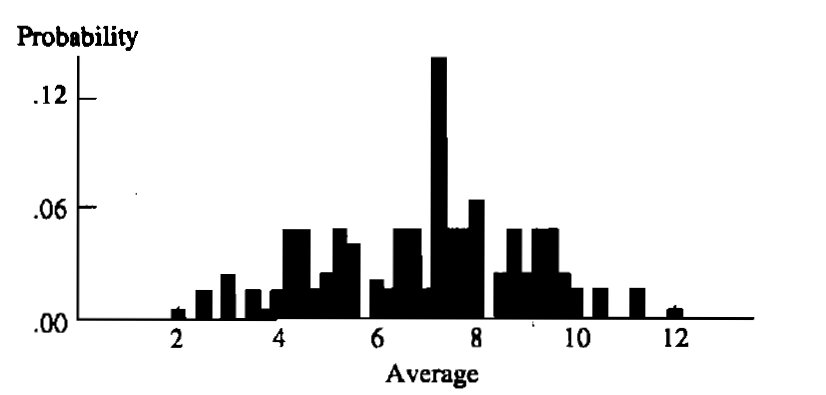

Teoria da Probabilidade
“Você nunca pode, por exemplo, prever o que um único homem fará, mas pode dizer com precisão o que uma média fará. Os indivíduos variam, mas as porcentagens permanecem constantes. Assim diz o estatístico.”
Sherlock Holmes O Signo dos Quatro
O tema da teoria da probabilidade é a fundação sobre a qual toda a estatística é construída, fornecendo um meio para modelar populações, experimentos ou quase qualquer outra coisa que possa ser considerada um fenômeno aleatório. Por meio desses modelos, os estatísticos são capazes de tirar inferências sobre populações, inferências baseadas no exame de apenas uma parte do todo.
A teoria da probabilidade tem uma história longa e rica, que remonta pelo menos ao século XVII, quando, a pedido de seu amigo, o Chevalier de Méré, Pascal e Fermat desenvolveram uma formulação matemática para as probabilidades em jogos de azar.
O objetivo deste capítulo não é fornecer uma introdução exaustiva à teoria da probabilidade; tal tentativa seria imprudente em um espaço tão curto. Em vez disso, tentamos delinear algumas das ideias básicas da teoria da probabilidade que são fundamentais para o estudo da estatística.
Assim como a estatística se baseia na fundação da teoria da probabilidade, a teoria da probabilidade, por sua vez, se baseia na teoria dos conjuntos, que é onde começamos.
1.1 Teoria dos Conjuntos
Um dos principais objetivos de um estatístico é tirar conclusões sobre uma população de objetos realizando um experimento. O primeiro passo nesse esforço é identificar os possíveis resultados ou, na terminologia estatística, o espaço amostral.
Definição 1.1.1 - Espaço Amostral
O conjunto, \(S\), de todos os resultados possíveis de um experimento particular é chamado de espaço amostral do experimento.
Se o experimento consiste em lançar uma moeda, o espaço amostral contém dois resultados, cara e coroa; portanto,
\[ S = \{H, T\}. \]
Se, por outro lado, o experimento consiste em observar as notas do SAT reportadas de alunos selecionados aleatoriamente em uma certa universidade, o espaço amostral seria o conjunto de inteiros positivos entre 200 e 800 que são múltiplos de dez — isto é, \(S = \{200, 210, 220, \dots, 780, 790, 800\}\). Finalmente, considere um experimento onde a observação é o tempo de reação a um determinado estímulo. Aqui, o espaço amostral consistiria em todos os números positivos, isto é, \(S = (0, \infty)\).
Podemos classificar os espaços amostrais em dois tipos, de acordo com o número de elementos que eles contêm. Espaços amostrais podem ser enumeráveis ou não enumeráveis; se os elementos de um espaço amostral podem ser colocados em correspondência biunívoca (1 para 1) com um subconjunto dos inteiros, o espaço amostral é enumerável. É claro que, se o espaço amostral contém apenas um número finito de elementos, ele é enumerável. Assim, os espaços amostrais do lançamento da moeda e das notas do SAT são ambos enumeráveis (de fato, finitos), enquanto o espaço amostral do tempo de reação é não enumerável, uma vez que os números reais positivos não podem ser colocados em correspondência biunívoca com os inteiros. Se, no entanto, medíssemos o tempo de reação arredondando para o segundo mais próximo, então o espaço amostral seria (em segundos) \(S = \{0, 1, 2, 3, \dots\}\), que é então enumerável.
Essa distinção entre espaços amostrais enumeráveis e não enumeráveis é importante apenas na medida em que dita a maneira pela qual as probabilidades podem ser atribuídas. Na maior parte das vezes, isso não causa problemas, embora o tratamento matemático das situações seja diferente. Em um nível filosófico, poderia ser argumentado que só podem existir espaços amostrais enumeráveis, uma vez que as medições não podem ser feitas com precisão infinita. (Um espaço amostral consistindo, digamos, de todos os números de dez dígitos é um espaço amostral enumerável.) Embora na prática isso seja verdade, métodos probabilísticos e estatísticos associados a espaços amostrais não enumeráveis são, em geral, menos trabalhosos do que aqueles para espaços amostrais enumeráveis e fornecem uma aproximação próxima da situação verdadeira (enumerável).
Uma vez definido o espaço amostral, estamos em posição de considerar coleções de possíveis resultados de um experimento.
Definição 1.1.2 - Evento
Um evento é qualquer coleção de possíveis resultados de um experimento, isto é, qualquer subconjunto de \(S\) (incluindo o próprio \(S\)).
Seja \(A\) um evento, um subconjunto de \(S\). Dizemos que o evento \(A\) ocorre se o resultado do experimento estiver no conjunto \(A\). Ao falar de probabilidades, geralmente falamos da probabilidade de um evento, em vez de um conjunto. Mas podemos usar os termos de forma intercambiável.
Primeiro, precisamos definir formalmente as duas relações a seguir, que nos permitem ordenar e igualar conjuntos:
\[ \begin{align*} A \subset B &\iff x \in A \Rightarrow x \in B; &(\text{continência}) \\ A = B &\iff A \subset B \text{ e } B \subset A. &(\text{igualdade}) \end{align*} \]
Dados dois eventos (ou conjuntos) \(A\) e \(B\), temos as seguintes operações elementares de conjuntos:
União: A união de \(A\) e \(B\), escrita \(A \cup B\), é o conjunto de elementos que pertencem a \(A\) ou a \(B\) ou a ambos:
\[ A \cup B = \{x : x \in A \text{ ou } x \in B\}. \]
Interseção: A interseção de \(A\) e \(B\), escrita \(A \cap B\), é o conjunto de elementos que pertencem a ambos \(A\) e \(B\):
\[ A \cap B = \{x : x \in A \text{ e } x \in B\}. \]
Complementar: O complementar de \(A\), escrito \(A^c\), é o conjunto de todos os elementos que não estão em \(A\):
\[ A^c = \{x : x \notin A\}. \]
Exemplo 1.1.3 (Operações com eventos)
Considere o experimento de selecionar uma carta aleatoriamente de um baralho padrão e anotar seu naipe: paus (C), ouros (D), copas (H) ou espadas (S). O espaço amostral é
\[ S = \{C, D, H, S\}, \]
e alguns eventos possíveis são
\[ A = \{C, D\} \quad \text{e} \quad B = \{D, H, S\}. \]
A partir desses eventos, podemos formar
\[ A \cup B = \{C, D, H, S\}, \quad A \cap B = \{D\}, \quad \text{e} \quad A^c = \{H, S\}. \]
Além disso, note que \(A \cup B = S\) (o evento \(S\)) e \((A \cup B)^c = \emptyset\), onde \(\emptyset\) denota o conjunto vazio (o conjunto que não consiste em nenhum elemento).
As operações elementares de conjuntos podem ser combinadas, de certa forma semelhante à maneira como a adição e a multiplicação podem ser combinadas. Desde que tenhamos cuidado, podemos tratar conjuntos como se fossem números. Podemos agora enunciar as seguintes propriedades úteis das operações de conjuntos.
Teorema 1.1.4
Para quaisquer três eventos, \(A, B\) e \(C\), definidos em um espaço amostral \(S\),
a. Comutatividade \[ \begin{align*} A \cup B &= B \cup A, \\ A \cap B &= B \cap A; \end{align*} \]
b. Associatividade \[ \begin{align*} A \cup (B \cup C) &= (A \cup B) \cup C, \\ A \cap (B \cap C) &= (A \cap B) \cap C; \end{align*} \]
c. Leis Distributivas \[ \begin{align*} A \cap (B \cup C) &= (A \cap B) \cup (A \cap C), \\ A \cup (B \cap C) &= (A \cup B) \cap (A \cup C); \end{align*} \]
d. Leis de DeMorgan \[ \begin{align*} (A \cup B)^c &= A^c \cap B^c, \\ (A \cap B)^c &= A^c \cup B^c. \end{align*} \]
Comprovação. A prova de grande parte deste teorema é deixada como Exercício 1.3. Além disso, os Exercícios 1.9 e 1.10 generalizam o teorema. Para ilustrar a técnica, no entanto, provaremos a Lei Distributiva:
\[ A \cap (B \cup C) = (A \cap B) \cup (A \cap C). \]
(Você pode estar familiarizado com o uso de diagramas de Venn para “provar” teoremas na teoria dos conjuntos. Advertimos que, embora os diagramas de Venn sejam às vezes úteis para visualizar uma situação, eles não constituem uma prova formal.) Para provar que dois conjuntos são iguais, deve-se demonstrar que cada conjunto contém o outro. Formalmente, então,
\[ \begin{align*} A \cap (B \cup C) &= \{x \in S : x \in A \text{ e } x \in (B \cup C)\}; \\ (A \cap B) \cup (A \cap C) &= \{x \in S : x \in (A \cap B) \text{ ou } x \in (A \cap C)\}. \end{align*} \]
Primeiro mostramos que \(A \cap (B \cup C) \subset (A \cap B) \cup (A \cap C)\). Seja \(x \in (A \cap (B \cup C))\). Pela definição de interseção, deve ser que \(x \in A\) e \(x \in (B \cup C)\), isto é, \(x \in B\) ou \(x \in C\). Como \(x\) também deve estar em \(A\), temos que \(x \in (A \cap B)\) ou \(x \in (A \cap C)\); portanto,
\[ x \in ((A \cap B) \cup (A \cap C)), \]
e a continência está estabelecida. Agora assuma \(x \in ((A \cap B) \cup (A \cap C))\). Isso implica que \(x \in (A \cap B)\) ou \(x \in (A \cap C)\). Se \(x \in (A \cap B)\), então \(x\) está em ambos \(A\) e \(B\). Visto que \(x \in B, x \in (B \cup C)\) e assim \(x \in (A \cap (B \cup C))\). Se, por outro lado, \(x \in (A \cap C)\), o argumento é similar, e novamente concluímos que \(x \in (A \cap (B \cup C))\). Assim, estabelecemos \((A \cap B) \cup (A \cap C) \subset A \cap (B \cup C)\), mostrando a continência na outra direção e, portanto, provando a Lei Distributiva. \(\square\)
As operações de união e interseção podem ser estendidas para coleções infinitas de conjuntos também. Se \(A_1, A_2, A_3, \dots\) é uma coleção de conjuntos, todos definidos em um espaço amostral \(S\), então
\[ \bigcup_{i=1}^{\infty} A_i = \{x \in S : x \in A_i \text{ para algum } i\}, \] \[ \bigcap_{i=1}^{\infty} A_i = \{x \in S : x \in A_i \text{ para todo } i\}. \]
Por exemplo, seja \(S = (0, 1]\) e defina \(A_i = [(1/i), 1]\). Então
\[ \begin{align*} \bigcup_{i=1}^{\infty} A_i &= \bigcup_{i=1}^{\infty} [(1/i), 1] &&= \{x \in (0, 1] : x \in [(1/i), 1] \text{ para algum } i\} \\ & &&= \{x \in (0, 1]\} &&= (0, 1]; \\ \bigcap_{i=1}^{\infty} A_i &= \bigcap_{i=1}^{\infty} [(1/i), 1] &&= \{x \in (0, 1] : x \in [(1/i), 1] \text{ para todo } i\} \\ & &&= \{x \in (0, 1] : x \in [1, 1]\} &&= \{1\}. \quad \text{(o ponto 1)} \end{align*} \]
Também é possível definir uniões e interseções sobre coleções não enumeráveis de conjuntos. Se \(\Gamma\) é um conjunto de índices (um conjunto de elementos a serem usados como índices), então
\[ \bigcup_{\alpha \in \Gamma} A_{\alpha} = \{x \in S : x \in A_{\alpha} \text{ para algum } \alpha\}, \] \[ \bigcap_{\alpha \in \Gamma} A_{\alpha} = \{x \in S : x \in A_{\alpha} \text{ para todo } \alpha\}. \]
Se, por exemplo, tomarmos \(\Gamma = \{\text{todos os números reais positivos}\}\) e \(A_{\alpha} = (0, \alpha]\), então \(\cup_{\alpha \in \Gamma} A_{\alpha} = (0, \infty)\) é uma união não enumerável. Embora uniões e interseções não enumeráveis não desempenhem um papel importante na estatística, elas às vezes fornecem um mecanismo útil para obter uma resposta (veja a Seção 8.2.3).
Finalmente, discutimos a ideia de uma partição do espaço amostral.
Definição 1.1.5 - Disjuntos
Dois eventos \(A\) e \(B\) são disjuntos (ou mutuamente exclusivos) se \(A \cap B = \emptyset\). Os eventos \(A_1, A_2, \dots\) são disjuntos dois a dois (ou mutuamente exclusivos) se \(A_i \cap A_j = \emptyset\) para todo \(i \ne j\).
Conjuntos disjuntos são conjuntos sem pontos em comum. Se desenharmos um diagrama de Venn para dois conjuntos disjuntos, os conjuntos não se sobrepõem. A coleção
\[ A_i = [i, i+1), \quad i = 0, 1, 2, \dots, \]
consiste em conjuntos disjuntos dois a dois. Note ainda que \(\cup_{i=0}^{\infty} A_i = [0, \infty)\).
Definição 1.1.6 - Partição
Se \(A_1, A_2, \dots\) são disjuntos dois a dois e \(\cup_{i=1}^{\infty} A_i = S\), então a coleção \(A_1, A_2, \dots\) forma uma partição de \(S\).
Os conjuntos \(A_i = [i, i+1)\) formam uma partição de \([0, \infty)\). Em geral, partições são muito úteis, permitindo-nos dividir o espaço amostral em pedaços pequenos e não sobrepostos.
1.2 Fundamentos da Probabilidade
Quando um experimento é realizado, a realização do experimento é um resultado no espaço amostral. Se o experimento é realizado um número de vezes, diferentes resultados podem ocorrer a cada vez ou alguns resultados podem se repetir. Essa “frequência de ocorrência” de um resultado pode ser pensada como uma probabilidade. Resultados mais prováveis ocorrem com mais frequência. Se os resultados de um experimento podem ser descritos probabilisticamente, estamos a caminho de analisar o experimento estatisticamente.
Nesta seção, descrevemos alguns dos fundamentos da teoria da probabilidade. Não definimos probabilidades em termos de frequências, mas, em vez disso, adotamos a abordagem axiomática matematicamente mais simples. Como será visto, a abordagem axiomática não se preocupa com as interpretações das probabilidades, mas preocupa-se apenas que as probabilidades sejam definidas por uma função que satisfaça os axiomas. Interpretações das probabilidades são outra questão. A “frequência de ocorrência” de um evento é um exemplo de uma interpretação particular de probabilidade. Outra interpretação possível é subjetiva, onde, em vez de pensar em probabilidade como frequência, podemos pensar nela como uma crença na chance de um evento ocorrer.
1.2.1 Fundações Axiomáticas
Para cada evento \(A\) no espaço amostral \(S\), queremos associar a \(A\) um número entre zero e um que será chamado de probabilidade de \(A\), denotado por \(P(A)\). Pareceria natural definir o domínio de \(P\) (o conjunto onde os argumentos da função \(P(\cdot)\) são definidos) como todos os subconjuntos de \(S\); isto é, para cada \(A \subset S\) definimos \(P(A)\) como a probabilidade de que \(A\) ocorra. Infelizmente, as coisas não são tão simples. Existem algumas dificuldades técnicas a serem superadas. Não nos deteremos nessas tecnicalidades; embora sejam importantes, geralmente são de maior interesse para probabilistas do que para estatísticos. No entanto, uma compreensão firme de estatística requer pelo menos uma familiaridade passageira com o seguinte.
Definição 1.2.1 - Sigma-álgebra
Uma coleção de subconjuntos de \(S\) é chamada de sigma-álgebra (ou corpo de Borel), denotada por \(\mathcal{B}\), se satisfaz as três propriedades a seguir: a. \(\emptyset \in \mathcal{B}\) (o conjunto vazio é um elemento de \(\mathcal{B}\)). b. Se \(A \in \mathcal{B}\), então \(A^c \in \mathcal{B}\) (\(\mathcal{B}\) é fechada sob complementação). c. Se \(A_1, A_2, \dots \in \mathcal{B}\), então \(\cup_{i=1}^{\infty} A_i \in \mathcal{B}\) (\(\mathcal{B}\) é fechada sob uniões enumeráveis).
O conjunto vazio \(\emptyset\) é um subconjunto de qualquer conjunto. Assim, \(\emptyset \subset S\). A propriedade (a) afirma que este subconjunto está sempre em uma sigma-álgebra. Uma vez que \(S = \emptyset^c\), as propriedades (a) e (b) implicam que \(S\) está sempre em \(\mathcal{B}\) também. Além disso, das Leis de DeMorgan, segue-se que \(\mathcal{B}\) é fechada sob interseções enumeráveis. Se \(A_1, A_2, \dots \in \mathcal{B}\), então \(A_1^c, A_2^c, \dots \in \mathcal{B}\) pela propriedade (b), e portanto \(\cup_{i=1}^{\infty} A_i^c \in \mathcal{B}\). No entanto, usando a Lei de DeMorgan (como no Exercício 1.9), temos
\[ \left( \bigcup_{i=1}^{\infty} A_i^c \right)^c = \bigcap_{i=1}^{\infty} A_i. \]
Assim, novamente pela propriedade (b), \(\cap_{i=1}^{\infty} A_i \in \mathcal{B}\). Associadas ao espaço amostral \(S\), podemos ter muitas sigma-álgebras diferentes. Por exemplo, a coleção dos dois conjuntos \(\{\emptyset, S\}\) é uma sigma-álgebra, geralmente chamada de sigma-álgebra trivial. A única sigma-álgebra com a qual nos preocuparemos é a menor que contém todos os conjuntos abertos em um dado espaço amostral \(S\).
Exemplo 1.2.2 (Sigma-álgebra—I)
Se \(S\) é finito ou enumerável, essas tecnicalidades realmente não surgem, pois definimos para um dado espaço amostral \(S\),
\[ \mathcal{B} = \{\text{todos os subconjuntos de } S, \text{ incluindo } S \text{ ele mesmo}\}. \]
Se \(S\) tem \(n\) elementos, existem \(2^n\) conjuntos em \(\mathcal{B}\) (veja Exercício 1.14). Por exemplo, se \(S = \{1, 2, 3\}\), então \(\mathcal{B}\) é a seguinte coleção de \(2^3 = 8\) conjuntos:
\[ \begin{matrix} \{1\} & \{1, 2\} & \{1, 2, 3\} \\ \{2\} & \{1, 3\} & \emptyset \\ \{3\} & \{2, 3\} & \end{matrix} \]
Em geral, se \(S\) é não enumerável, não é uma tarefa fácil descrever \(\mathcal{B}\). No entanto, \(\mathcal{B}\) é escolhida para conter qualquer conjunto de interesse.
Exemplo 1.2.3 (Sigma-álgebra—II)
Seja \(S = (-\infty, \infty)\), a reta real. Então \(\mathcal{B}\) é escolhida para conter todos os conjuntos da forma
\[ [a, b], \quad (a, b], \quad (a, b), \quad \text{e} \quad [a, b) \]
para todos os números reais \(a\) e \(b\). Além disso, pelas propriedades de \(\mathcal{B}\), segue-se que \(\mathcal{B}\) contém todos os conjuntos que podem ser formados tomando uniões (possivelmente infinitas enumeráveis) e interseções de conjuntos das variedades acima.
Estamos agora em posição de definir uma função de probabilidade.
Definição 1.2.4 - Função de Probabilidade
Dado um espaço amostral \(S\) e uma sigma-álgebra associada \(\mathcal{B}\), uma função de probabilidade é uma função \(P\) com domínio \(\mathcal{B}\) que satisfaz 1. \(P(A) \ge 0\) para todo \(A \in \mathcal{B}\). 2. \(P(S) = 1\). 3. Se \(A_1, A_2, \dots \in \mathcal{B}\) são disjuntos dois a dois, então \(P(\cup_{i=1}^{\infty} A_i) = \sum_{i=1}^{\infty} P(A_i)\).
As três propriedades dadas na Definição 1.2.4 são geralmente referidas como os Axiomas da Probabilidade (ou os Axiomas de Kolmogorov, em homenagem a A. Kolmogorov, um dos pais da teoria da probabilidade). Qualquer função \(P\) que satisfaça os Axiomas de Probabilidade é chamada de função de probabilidade. A definição axiomática não tenta dizer qual função particular \(P\) escolher; ela apenas requer que \(P\) satisfaça os axiomas. Para qualquer espaço amostral, muitas funções de probabilidade diferentes podem ser definidas. Qual delas reflete o que é provável de ser observado em um experimento particular ainda precisa ser discutido.
Exemplo 1.2.5 (Definindo probabilidades—I)
Considere o experimento simples de lançar uma moeda justa, então \(S = \{H, T\}\). Por uma moeda “justa”, queremos dizer uma moeda balanceada que tem igual probabilidade de cair com a face para cima ou para baixo, e, portanto, a função de probabilidade razoável é aquela que atribui probabilidades iguais a cara e coroa, isto é,
\[ P(\{H\}) = P(\{T\}). \]
Note que (1.2.2) não decorre dos Axiomas de Probabilidade, mas é de fora dos axiomas. Usamos uma interpretação de simetria da probabilidade (ou apenas intuição) para impor o requisito de que cara e coroa sejam igualmente prováveis. Como \(S = \{H\} \cup \{T\}\), temos, pelo Axioma 1, \(P(\{H\} \cup \{T\}) = 1\). Além disso, \(\{H\}\) e \(\{T\}\) são disjuntos, então \(P(\{H\} \cup \{T\}) = P(\{H\}) + P(\{T\})\) e
\[ P(\{H\}) + P(\{T\}) = 1. \]
Resolvendo simultaneamente (1.2.2) e (1.2.3), temos \(P(\{H\}) = P(\{T\}) = \frac{1}{2}\). Como (1.2.2) é baseado em nosso conhecimento do experimento particular, e não nos axiomas, quaisquer valores não negativos para \(P(\{H\})\) e \(P(\{T\})\) que satisfaçam (1.2.3) definem uma função de probabilidade legítima. Por exemplo, poderíamos escolher \(P(\{H\}) = \frac{1}{9}\) e \(P(\{T\}) = \frac{8}{9}\).
Precisamos de métodos gerais para definir funções de probabilidade que saibamos que sempre satisfarão os Axiomas de Kolmogorov. Não queremos ter que verificar os Axiomas para cada nova função de probabilidade, como fizemos no Exemplo 1.2.5. O seguinte fornece um método comum de definir uma função de probabilidade legítima.
Teorema 1.2.6
Seja \(S = \{s_1, \dots, s_n\}\) um conjunto finito. Seja \(\mathcal{B}\) qualquer sigma-álgebra de subconjuntos de \(S\). Sejam \(p_1, \dots, p_n\) números não negativos que somam 1. Para qualquer \(A \in \mathcal{B}\), defina \(P(A)\) por
\[ P(A) = \sum_{\{i : s_i \in A\}} p_i. \]
(A soma sobre um conjunto vazio é definida como 0.) Então \(P\) é uma função de probabilidade em \(\mathcal{B}\). Isso permanece verdadeiro se \(S = \{s_1, s_2, \dots\}\) é um conjunto enumerável.
Comprovação. Daremos a prova para \(S\) finito. Para qualquer \(A \in \mathcal{B}, P(A) = \sum_{\{i : s_i \in A\}} p_i \ge 0\), porque todo \(p_i \ge 0\). Assim, o Axioma 1 é verdadeiro. Agora,
\[ P(S) = \sum_{\{i : s_i \in S\}} p_i = \sum_{i=1}^n p_i = 1. \]
Assim, o Axioma 2 é verdadeiro. Sejam \(A_1, \dots, A_k\) eventos disjuntos dois a dois. (\(\mathcal{B}\) contém apenas um número finito de conjuntos, então precisamos considerar apenas uniões disjuntas finitas.) Então,
\[ P\left( \bigcup_{i=1}^k A_i \right) = \sum_{\{j : s_j \in \cup_{i=1}^k A_i\}} p_j = \sum_{i=1}^k \sum_{\{j : s_j \in A_i\}} p_j = \sum_{i=1}^k P(A_i). \]
A primeira e a terceira igualdades são verdadeiras pela definição de \(P(A)\). A disjunção dos \(A_i\)s garante que a segunda igualdade é verdadeira, porque os mesmos \(p_j\)s aparecem exatamente uma vez em cada lado da igualdade. Assim, o Axioma 3 é verdadeiro e os Axiomas de Kolmogorov são satisfeitos. \(\square\)
A realidade física do experimento pode ditar a atribuição de probabilidade, como o próximo exemplo ilustra.
Exemplo 1.2.7 (Definindo probabilidades—II)
O jogo de dardos é jogado lançando um dardo em um alvo e recebendo uma pontuação correspondente ao número atribuído à região em que o dardo cai. Para um jogador novato, parece razoável assumir que a probabilidade de o dardo atingir uma região específica é proporcional à área da região. Assim, uma região maior tem uma probabilidade maior de ser atingida. Referindo-se à Figura 1.2.1, vemos que o alvo de dardos tem raio \(r\) e a distância entre os anéis é \(r/5\). Se fizermos a suposição de que o alvo é sempre atingido (veja o Exercício 1.7 para uma variação sobre isso), então temos
\[ P(\text{marcar } i \text{ pontos}) = \frac{\text{Área da região } i}{\text{Área do alvo de dardos}}. \]

Por exemplo,
\[ P(\text{marcar } 1 \text{ ponto}) = \frac{\pi r^2 - \pi(4r/5)^2}{\pi r^2} = 1 - \left( \frac{4}{5} \right)^2. \]
É fácil derivar a fórmula geral, e descobrimos que
\[ P(\text{marcar } i \text{ pontos}) = \frac{(6-i)^2 - (5-i)^2}{5^2}, \quad i = 1, \dots, 5, \]
independente de \(\pi\) e \(r\). A soma das áreas das regiões disjuntas é igual à área do alvo de dardos. Assim, as probabilidades que foram atribuídas aos cinco resultados somam 1, e, pelo Teorema 1.2.6, esta é uma função de probabilidade (veja Exercício 1.8).
Antes de deixarmos o desenvolvimento axiomático da probabilidade, há mais um ponto a considerar. O Axioma 3 da Definição 1.2.4, que é comumente conhecido como o Axioma da Aditividade Enumerável, não é universalmente aceito entre os estatísticos. De fato, pode-se argumentar que os axiomas devem ser simples, autoevidentes. Comparando o Axioma 3 com os outros axiomas, que são simples e autoevidentes, isso pode nos levar a duvidar se é razoável assumir a verdade do Axioma 3.
O Axioma da Aditividade Enumerável é rejeitado por uma escola de estatísticos liderada por deFinetti (1972), que opta por substituir este axioma pelo Axioma da Aditividade Finita.
Axioma da Aditividade Finita: Se \(A \in \mathcal{B}\) e \(B \in \mathcal{B}\) são disjuntos, então
\[ P(A \cup B) = P(A) + P(B). \]
Embora este axioma possa não ser inteiramente autoevidente, é certamente mais simples do que o Axioma da Aditividade Enumerável (e é implicado por ele – veja Exercício 1.12).
Assumir apenas a aditividade finita, embora talvez mais plausível, pode levar a complicações inesperadas na teoria estatística – complicações que, a este nível, não necessariamente aumentam a compreensão do assunto. Portanto, prosseguimos sob a suposição de que o Axioma da Aditividade Enumerável é válido.
1.2.2 O Cálculo de Probabilidades
A partir dos Axiomas da Probabilidade, podemos construir muitas propriedades da função de probabilidade, propriedades que são bastante úteis no cálculo de probabilidades mais complicadas. Algumas dessas manipulações serão discutidas em detalhes nesta seção; outras serão deixadas como exercícios.
Começamos com algumas propriedades (bastante autoevidentes) da função de probabilidade quando aplicadas a um único evento.
Teorema 1.2.8
Se P é uma função de probabilidade e A é qualquer conjunto em \(\mathcal{B}\), então
- a. \(P(\emptyset) = 0\), onde \(\emptyset\) é o conjunto vazio;
- b. \(P(A) \le 1\);
- c. \(P(A^c) = 1 - P(A)\).
Comprovação. É mais fácil provar (c) primeiro. Os conjuntos \(A\) e \(A^c\) formam uma partição do espaço amostral, isto é, \(S = A \cup A^c\). Portanto,
\[ P(A \cup A^c) = P(S) = 1 \]
pelo segundo axioma. Além disso, \(A\) e \(A^c\) são disjuntos, então pelo terceiro axioma,
\[ P(A \cup A^c) = P(A) + P(A^c). \]
Combinando (1.2.4) e (1.2.5) obtemos (c). Como \(P(A^c) \ge 0\), (b) é imediatamente implicado por (c). Para provar (a), usamos um argumento semelhante em \(S = S \cup \emptyset\). (Lembre-se que tanto \(S\) quanto \(\emptyset\) estão sempre em \(\mathcal{B}\).) Como \(S\) e \(\emptyset\) são disjuntos, temos
\[ 1 = P(S) = P(S \cup \emptyset) = P(S) + P(\emptyset), \]
e assim \(P(\emptyset) = 0\). \(\square\)
O Teorema 1.2.8 contém propriedades que são tão básicas que também têm o sabor de axiomas, embora tenhamos provado formalmente usando apenas os Axiomas de Kolmogorov originais. O próximo teorema, que é semelhante em espírito ao Teorema 1.2.8, contém afirmações que não são tão autoevidentes.
Teorema 1.2.9
Se P é uma função de probabilidade e A e B são quaisquer conjuntos em \(\mathcal{B}\), então
- a. \(P(B \cap A^c) = P(B) - P(A \cap B)\);
- b. \(P(A \cup B) = P(A) + P(B) - P(A \cap B)\);
- c. Se \(A \subset B\), então \(P(A) \le P(B)\).
Comprovação. Para estabelecer (a), note que para quaisquer conjuntos \(A\) e \(B\) temos
\[ B = \{B \cap A\} \cup \{B \cap A^c\}, \]
e portanto
\[ P(B) = P(\{B \cap A\} \cup \{B \cap A^c\}) = P(B \cap A) + P(B \cap A^c), \]
onde a última igualdade em (1.2.6) decorre do fato de que \(B \cap A\) e \(B \cap A^c\) são disjuntos. Reorganizando (1.2.6) obtemos (a). Para estabelecer (b), usamos a identidade
\[ A \cup B = A \cup \{B \cap A^c\}. \]
Um diagrama de Venn mostrará por que (1.2.7) é válida, embora uma prova formal não seja difícil (veja Exercício 1.2). Usando (1.2.7) e o fato de que \(A\) e \(B \cap A^c\) são disjuntos (visto que \(A\) e \(A^c\) o são), temos
\[ P(A \cup B) = P(A) + P(B \cap A^c) = P(A) + P(B) - P(A \cap B) \]
a partir de (a). Se \(A \subset B\), então \(A \cap B = A\). Portanto, usando (a), temos
\[ 0 \le P(B \cap A^c) = P(B) - P(A), \]
estabelecendo (c). \(\square\)
A fórmula (b) do Teorema 1.2.9 fornece uma desigualdade útil para a probabilidade de uma interseção. Como \(P(A \cup B) \le 1\), temos de (1.2.8), após algum rearranjo,
\[ P(A \cap B) \ge P(A) + P(B) - 1. \]
Esta desigualdade é um caso especial do que é conhecido como Desigualdade de Bonferroni (Miller 1981 é uma boa referência). A Desigualdade de Bonferroni nos permite limitar a probabilidade de um evento simultâneo (a interseção) em termos das probabilidades dos eventos individuais.
Exemplo 1.2.10 (Desigualdade de Bonferroni)
A Desigualdade de Bonferroni é particularmente útil quando é difícil (ou até impossível) calcular a probabilidade da interseção, mas se deseja alguma ideia do tamanho dessa probabilidade. Suponha que \(A\) e \(B\) sejam dois eventos e cada um tenha probabilidade 0,95. Então a probabilidade de que ambos ocorram é limitada inferiormente por
\[ P(A \cap B) \ge P(A) + P(B) - 1 = 0,95 + 0,95 - 1 = 0,90. \]
Note que, a menos que as probabilidades dos eventos individuais sejam suficientemente grandes, o limite de Bonferroni é um número negativo inútil (embora correto!).
Encerramos esta seção com um teorema que fornece alguns resultados úteis para lidar com uma coleção de conjuntos.
Teorema 1.2.11
Se P é uma função de probabilidade, então
- a. \(P(A) = \sum_{i=1}^{\infty} P(A \cap C_i)\) para qualquer partição \(C_1, C_2, \dots\);
- b. \(P(\cup_{i=1}^{\infty} A_i) \le \sum_{i=1}^{\infty} P(A_i)\) para quaisquer conjuntos \(A_1, A_2, \dots\). (Desigualdade de Boole)
Comprovação. Visto que \(C_1, C_2, \dots\) formam uma partição, temos que \(C_i \cap C_j = \emptyset\) para todo \(i \ne j\), e \(S = \cup_{i=1}^{\infty} C_i\). Portanto,
\[ A = A \cap S = A \cap \left( \bigcup_{i=1}^{\infty} C_i \right) = \bigcup_{i=1}^{\infty} (A \cap C_i), \]
onde a última igualdade segue da Lei Distributiva (Teorema 1.1.4). Nós, portanto, temos
\[ P(A) = P\left( \bigcup_{i=1}^{\infty} (A \cap C_i) \right). \]
Agora, como os \(C_i\) são disjuntos, os conjuntos \(A \cap C_i\) também são disjuntos, e das propriedades de uma função de probabilidade temos
\[ P\left( \bigcup_{i=1}^{\infty} (A \cap C_i) \right) = \sum_{i=1}^{\infty} P(A \cap C_i), \]
estabelecendo (a). Para estabelecer (b), primeiro construímos uma coleção disjunta \(A_1^*, A_2^*, \dots\), com a propriedade de que \(\cup_{i=1}^{\infty} A_i^* = \cup_{i=1}^{\infty} A_i\). Definimos \(A_i^*\) por
\[ A_1^* = A_1, \quad A_i^* = A_i \setminus \left( \bigcup_{j=1}^{i-1} A_j \right), \quad i = 2, 3, \dots, \]
onde a notação \(A \setminus B\) denota a parte de \(A\) que não intersecta com \(B\). Em símbolos mais familiares, \(A \setminus B = A \cap B^c\). Deve ser fácil ver que \(\cup_{i=1}^{\infty} A_i^* = \cup_{i=1}^{\infty} A_i\), e portanto temos
\[ P\left( \bigcup_{i=1}^{\infty} A_i \right) = P\left( \bigcup_{i=1}^{\infty} A_i^* \right) = \sum_{i=1}^{\infty} P(A_i^*), \]
onde a última igualdade segue uma vez que os \(A_i^*\) são disjuntos. Para ver isso, escrevemos
\[ \begin{align*} A_i^* \cap A_k^* &= \left\{ A_i \cap \left( \bigcup_{j=1}^{i-1} A_j \right)^c \right\} \cap \left\{ A_k \cap \left( \bigcup_{j=1}^{k-1} A_j \right)^c \right\} \quad (\text{definição de } A_i^*) \\ &= \left\{ A_i \cap \left( \bigcap_{j=1}^{i-1} A_j^c \right) \right\} \cap \left\{ A_k \cap \left( \bigcap_{j=1}^{k-1} A_j^c \right) \right\} \quad (\text{Leis de DeMorgan}) \end{align*} \]
Agora, se \(i > k\), a primeira interseção acima estará contida no conjunto \(A_k^c\), que terá uma interseção vazia com \(A_k\). Se \(k > i\), o argumento é semelhante. Além disso, por construção \(A_i^* \subset A_i\), então \(P(A_i^*) \le P(A_i)\) e temos
\[ \sum_{i=1}^{\infty} P(A_i^*) \le \sum_{i=1}^{\infty} P(A_i), \]
estabelecendo (b). \(\square\)
Existe uma similaridade entre a Desigualdade de Boole e a Desigualdade de Bonferroni. De fato, elas são essencialmente a mesma coisa. Se aplicarmos a Desigualdade de Boole a \(A^c\), temos
\[ P\left( \bigcup_{i=1}^n A_i^c \right) \le \sum_{i=1}^n P(A_i^c), \]
e usando os fatos de que \(\cup A_i^c = (\cap A_i)^c\) e \(P(A_i^c) = 1 - P(A_i)\), obtemos
\[ 1 - P\left( \bigcap_{i=1}^n A_i \right) \le n - \sum_{i=1}^n P(A_i). \]
Isso se torna, ao reorganizar os termos,
\[ P\left( \bigcap_{i=1}^n A_i \right) \ge \sum_{i=1}^n P(A_i) - (n-1), \]
que é uma versão mais geral da Desigualdade de Bonferroni de (1.2.9).
1.2.3 Contagem
O processo elementar de contagem pode se tornar bastante sofisticado quando colocado nas mãos de um estatístico. Na maioria das vezes, métodos de contagem são usados para construir atribuições de probabilidade em espaços amostrais finitos, embora possam ser usados para responder a outras perguntas também.
Exemplo 1.2.12 (Loteria-I)
Por vários anos, a loteria do estado de Nova York operou de acordo com o seguinte esquema. A partir dos números \(1, 2, \dots, 44\), uma pessoa pode escolher quaisquer seis para seu bilhete. O número vencedor é então decidido selecionando aleatoriamente seis números dentre os quarenta e quatro. Para calcular a probabilidade de ganhar, devemos primeiro contar quantos grupos diferentes de seis números podem ser escolhidos a partir dos quarenta e quatro.
Exemplo 1.2.13 (Torneio)
Em um torneio de eliminação simples, como o torneio de tênis U.S. Open, os jogadores avançam apenas se vencerem (ao contrário de torneios de eliminação dupla ou todos contra todos). Se tivermos 16 participantes, podemos estar interessados no número de caminhos que um jogador em particular pode tomar para a vitória, onde um caminho é considerado uma sequência de oponentes.
Problemas de contagem, em geral, parecem complicados, e muitas vezes devemos fazer nossa contagem sujeita a muitas restrições. A maneira de resolver tais problemas é dividi-los em uma série de tarefas simples que são fáceis de contar, e empregar regras conhecidas de combinação de tarefas. O teorema a seguir é um primeiro passo em tal processo e às vezes é conhecido como o Teorema Fundamental da Contagem.
Teorema 1.2.14
Se um trabalho consiste em \(k\) tarefas separadas, a i-ésima das quais pode ser feita de \(n_i\) maneiras, \(i = 1, \dots, k\), então o trabalho inteiro pode ser feito de \(n_1 \times n_2 \times \dots \times n_k\) maneiras.
Comprovação. Basta provar o teorema para \(k=2\) (veja Exercício 1.15). A prova é apenas uma questão de contagem cuidadosa. A primeira tarefa pode ser feita de \(n_1\) maneiras, e para cada uma dessas maneiras temos \(n_2\) escolhas para a segunda tarefa. Assim, podemos fazer o trabalho em
\[ \underbrace{(1 \times n_2) + (1 \times n_2) + \dots + (1 \times n_2)}_{n_1 \text{ termos}} = n_1 \times n_2 \]
maneiras, estabelecendo o teorema para \(k=2\). \(\square\)
Exemplo 1.2.15 (Loteria—II)
Embora o Teorema Fundamental da Contagem seja um lugar razoável para começar, em aplicações geralmente há mais aspectos de um problema a considerar. Por exemplo, na loteria do estado de Nova York, o primeiro número pode ser escolhido de 44 maneiras e o segundo número de 43 maneiras, totalizando \(44 \times 43 = 1.892\) maneiras de escolher os dois primeiros números. No entanto, se uma pessoa tem permissão para escolher o mesmo número duas vezes, então os dois primeiros números podem ser escolhidos de \(44 \times 44 = 1.936\) maneiras.
A distinção feita no Exemplo 1.2.15 é entre contar com reposição e contar sem reposição. Há um segundo elemento crucial em qualquer problema de contagem: se a ordem das tarefas é importante. Para ilustrar com o exemplo da loteria, suponha que os números vencedores sejam selecionados na ordem 12, 37, 35, 9, 13, 22. Uma pessoa que selecionou 9, 12, 13, 22, 35, 37 se qualifica como vencedora? Em outras palavras, a ordem na qual a tarefa é realizada realmente importa? Levando todas essas considerações em conta, podemos construir uma tabela \(2 \times 2\) de possibilidades:
| Sem reposição | Com reposição | |
|---|---|---|
| Ordenado | ||
| Não ordenado |
Antes de começarmos a contar, a seguinte definição nos dá uma notação extremamente útil.
Definição 1.2.16
Para um inteiro positivo \(n\), \(n!\) (lê-se \(n\) fatorial) é o produto de todos os inteiros positivos menores ou iguais a \(n\). Isto é, \[ n! = n \times (n-1) \times (n-2) \times \dots \times 3 \times 2 \times 1. \] Além disso, definimos \(0! = 1\).
Vamos agora considerar todos os possíveis bilhetes de loteria sob cada um desses quatro casos.
Ordenado, sem reposição: Pelo Teorema Fundamental da Contagem, o primeiro número pode ser selecionado de 44 maneiras, o segundo de 43 maneiras, etc. Portanto, existem \[ 44 \times 43 \times 42 \times 41 \times 40 \times 39 = \frac{44!}{38!} = 5.082.517.440 \] bilhetes possíveis.
Ordenado, com reposição: Como cada número pode agora ser selecionado de 44 maneiras (porque o número escolhido é reposto), existem \[ 44 \times 44 \times 44 \times 44 \times 44 \times 44 = 44^6 = 7.256.313.856 \] bilhetes possíveis.
Não ordenado, sem reposição: Sabemos o número de bilhetes possíveis quando a ordem deve ser considerada, então o que devemos fazer é dividir as ordenações redundantes. Novamente pelo Teorema Fundamental, seis números podem ser organizados de \(6 \times 5 \times 4 \times 3 \times 2 \times 1\) maneiras, então o número total de bilhetes não ordenados é
\[ \frac{44 \times 43 \times 42 \times 41 \times 40 \times 39}{6 \times 5 \times 4 \times 3 \times 2 \times 1} = \frac{44!}{6! 38!} = 7.059.052. \] Esta forma de contar desempenha um papel central em grande parte da estatística — tanto, de fato, que ganhou sua própria notação.
Definição 1.2.17
Para inteiros não negativos \(n\) e \(r\), onde \(n \ge r\), definimos o símbolo \(\binom{n}{r}\), lido \(n\) escolhe \(r\), como \[ \binom{n}{r} = \frac{n!}{r!(n-r)!}. \]
Em nosso exemplo da loteria, o número de bilhetes possíveis (não ordenados, sem reposição) é \(\binom{44}{6}\). Esses números também são referidos como coeficientes binomiais, por razões que ficarão claras no Capítulo 3.
- Não ordenado, com reposição: Este é o caso mais difícil de contar. Você pode primeiro supor que a resposta é \(44^6 / (6 \times 5 \times 4 \times 3 \times 2 \times 1)\), mas isso não está correto (é muito pequeno). Para contar neste caso, é mais fácil pensar em colocar 6 marcadores nos 44 números. De fato, podemos pensar nos 44 números definindo compartimentos nos quais podemos colocar os seis marcadores, M, como mostrado nesta figura.

O número de bilhetes possíveis é então igual ao número de maneiras que podemos colocar os 6 marcadores nos 44 compartimentos. Mas isso pode ser ainda mais reduzido observando que tudo o que precisamos acompanhar é o arranjo dos marcadores e das paredes dos compartimentos. Note ainda que as duas paredes mais externas não desempenham nenhum papel. Assim, temos que contar todos os arranjos de 43 paredes (44 compartimentos geram 45 paredes, mas desconsideramos as duas paredes das extremidades) e 6 marcadores. Temos \(43 + 6 = 49\) objetos, que podem ser arranjados de \(49!\) maneiras. No entanto, para eliminar as ordenações redundantes, devemos dividir tanto por \(6!\) quanto por \(43!\), de modo que o número total de arranjos é
\[ \frac{49!}{6! 43!} = 13.983.816. \]
Embora todas as derivações precedentes tenham sido feitas em termos de um exemplo, deve ser fácil ver que elas valem em geral. Por completude, podemos resumir essas situações na Tabela 1.2.1.
Tabela 1.2.1. Número de arranjos possíveis de tamanho \(r\) a partir de \(n\) objetos
| Sem reposição | Com reposição | |
|---|---|---|
| Ordenado | \(\frac{n!}{(n-r)!}\) | \(n^r\) |
| Não ordenado | \(\binom{n}{r}\) | \(\binom{n+r-1}{r}\) |
1.2.4 Enumerando Resultados
As técnicas de contagem da seção anterior são úteis quando o espaço amostral \(S\) é um conjunto finito e todos os resultados em \(S\) são igualmente prováveis. Então, probabilidades de eventos podem ser calculadas simplesmente contando o número de resultados no evento. Para ver isso, suponha que \(S = \{s_1, \dots, s_N\}\) é um espaço amostral finito. Dizer que todos os resultados são igualmente prováveis significa que \(P(\{s_i\}) = 1/N\) para cada resultado \(s_i\). Então, usando o Axioma 3 da Definição 1.2.4, temos, para qualquer evento \(A\),
\[ P(A) = \sum_{s_i \in A} P(\{s_i\}) = \sum_{s_i \in A} \frac{1}{N} = \frac{ \text{ Número de elementos em } A}{ \text{ Número de elementos em } S}. \]
Para grandes espaços amostrais, as técnicas de contagem podem ser usadas para calcular tanto o numerador quanto o denominador desta expressão.
Exemplo 1.2.18 (Pôquer)
Considere escolher uma mão de pôquer de cinco cartas de um baralho padrão de 52 cartas de baralho. Obviamente, estamos amostrando sem reposição do baralho. Mas para especificar os resultados possíveis (mãos possíveis), devemos decidir se pensamos na mão sendo dada sequencialmente (ordenada) ou toda de uma vez (não ordenada). Se desejamos calcular probabilidades para eventos que dependem da ordem, como a probabilidade de um ás nas duas primeiras cartas, então devemos usar os resultados ordenados. Mas se nossos eventos não dependem da ordem, podemos usar os resultados não ordenados. Para este exemplo, usaremos os resultados não ordenados, então o espaço amostral consiste em todas as mãos de cinco cartas que podem ser escolhidas do baralho de 52 cartas. Existem \(\binom{52}{5} = 2.598.960\) mãos possíveis. Se o baralho for bem embaralhado e as cartas forem dadas aleatoriamente, é razoável atribuir probabilidade \(1/2.598.960\) a cada mão possível. Calculamos agora algumas probabilidades contando resultados em eventos. Qual é a probabilidade de ter quatro ases? Quantas mãos diferentes existem com quatro ases? Se especificarmos que quatro das cartas são ases, então há 48 maneiras diferentes de especificar a quinta carta. Assim,
\[ P(\text{quatro ases}) = \frac{48}{2.598.960}, \]
menos de 1 chance em 50.000. Apenas uma contagem ligeiramente mais complicada, usando o Teorema 1.2.14, nos permite calcular a probabilidade de ter uma quadra (quatro cartas do mesmo valor). Existem 13 maneiras de especificar qual denominação haverá quatro. Depois de especificarmos esses quatro, existem 48 maneiras de especificar a quinta. Assim, o número total de mãos com uma quadra é \((13)(48)\) e
\[ P(\text{quadra}) = \frac{(13)(48)}{2.598.960} = \frac{624}{2.598.960}. \]
Para calcular a probabilidade de exatamente um par (não dois pares, não trinca, etc.) combinamos algumas das técnicas de contagem. O número de mãos com exatamente um par é
\[ 13 \binom{4}{2} \binom{12}{3} 4^3 = 1.098.240. \]
A expressão (1.2.11) vem do Teorema 1.2.14 porque:
\(13\) é o número de maneiras de especificar a denominação para o par,
\(\binom{4}{2}\) é o número de maneiras de especificar as duas cartas daquela denominação,
\(\binom{12}{3}\) é o número de maneiras de especificar as outras três denominações,
\(4^3\) é o número de maneiras de especificar as outras três cartas dessas denominações.
Assim,
\[ P(\text{exatamente um par}) = \frac{1.098.240}{2.598.960}. \]
Ao amostrar sem reposição, como no Exemplo 1.2.18, se queremos calcular a probabilidade de um evento que não depende da ordem, podemos usar tanto o espaço amostral ordenado quanto o não ordenado. Cada resultado no espaço amostral não ordenado corresponde a \(r!\) resultados no espaço amostral ordenado. Assim, ao contar resultados no espaço amostral ordenado, usamos um fator de \(r!\) tanto no numerador quanto no denominador que cancelará para dar a mesma probabilidade como se contássemos no espaço amostral não ordenado. A situação é diferente se amostramos com reposição. Cada resultado no espaço amostral não ordenado corresponde a alguns resultados no espaço amostral ordenado, mas o número de resultados difere.
Exemplo 1.2.19 (Amostragem com reposição)
Considere amostrar \(r=2\) itens de \(n=3\) itens, com reposição. Os resultados nos espaços amostrais ordenados e não ordenados são estes:
| Não ordenado | \(\{1,1\}\) | \(\{2,2\}\) | \(\{3,3\}\) | \(\{1,2\}\) | \(\{1,3\}\) | \(\{2,3\}\) |
| Ordenado | \((1,1)\) | \((2,2)\) | \((3,3)\) | \((1,2), (2,1)\) | \((1,3), (3,1)\) | \((2,3), (3,2)\) |
| Probabilidade | \(1/9\) | \(1/9\) | \(1/9\) | \(2/9\) | \(2/9\) | \(2/9\) |
As probabilidades vêm da consideração dos nove resultados no espaço amostral ordenado como sendo igualmente prováveis. Isto corresponde à interpretação comum de “amostragem com reposição”; a saber, um dos três itens é escolhido, cada um com probabilidade 1/3; o item é anotado e reposto; os itens são misturados e novamente um dos três itens é escolhido, cada um com probabilidade 1/3. Vê-se que os seis resultados no espaço amostral não ordenado não são igualmente prováveis sob este tipo de amostragem. A fórmula para o número de resultados no espaço amostral não ordenado é útil para enumerar os resultados, mas os resultados ordenados devem ser usados para calcular probabilidades corretamente.
Alguns autores argumentam que é apropriado atribuir probabilidades iguais aos resultados não ordenados quando “distribuindo aleatoriamente \(r\) bolas indistinguíveis em \(n\) urnas distinguíveis”. Isto é, uma urna é escolhida aleatoriamente e uma bola colocada nela, e isso é repetido \(r\) vezes. A ordem em que as bolas são colocadas não é registrada, então, no final, um resultado como \(\{1,3\}\) significa uma bola na urna 1 e uma bola na urna 3. Mas aqui está o problema com essa interpretação. Suponha que duas pessoas observem este processo, e o Observador 1 registra a ordem em que as bolas são colocadas, mas o Observador 2 não. O Observador 1 atribuirá probabilidade \(2/9\) ao evento \(\{1,3\}\). O Observador 2, que está observando exatamente o mesmo processo, também deve atribuir probabilidade \(2/9\) a este evento. Mas se os seis resultados não ordenados são escritos em pedaços de papel idênticos e um é escolhido aleatoriamente para determinar a colocação das bolas, então os resultados não ordenados têm, cada um, probabilidade \(1/6\). Então o Observador 2 atribuirá probabilidade \(1/6\) ao evento \(\{1,3\}\). A confusão surge porque a frase “com reposição” tipicamente será interpretada com o tipo sequencial de amostragem que descrevemos acima, levando a atribuir uma probabilidade \(2/9\) ao evento \(\{1,3\}\). Esta é a maneira correta de proceder, pois as probabilidades devem ser determinadas pelo mecanismo de amostragem, não se as bolas são distinguíveis ou indistinguíveis.
Exemplo 1.2.20 (Calculando uma média)
Como uma ilustração da abordagem distinguível/indistinguível, suponha que vamos calcular todas as médias possíveis de quatro números selecionados de
\[ 2, 4, 9, 12 \]
onde sorteamos os números com reposição. Por exemplo, possíveis sorteios são \(\{2, 4, 4, 9\}\) com média 4,75 e \(\{4, 4, 9, 9\}\) com média 6,5. Se estamos interessados apenas na média dos números amostrados, a ordenação não é importante e, assim, o número total de amostras distintas é obtido contando de acordo com amostragem não ordenada, com reposição. O número total de amostras distintas é \(\binom{4+4-1}{4}\). Mas agora, para calcular a distribuição de probabilidade das médias amostrais, devemos contar as diferentes maneiras que uma média particular pode ocorrer. O valor 4,75 pode ocorrer apenas se a amostra contiver um 2, dois 4s e um 9. O número de amostras possíveis que têm esta configuração é dado na seguinte tabela:

| Não ordenado | Ordenado |
|---|---|
| \(\{2, 4, 4, 9\}\) | \((2, 4, 4, 9), (2, 4, 9, 4), (2, 9, 4, 4), (4, 2, 4, 9),\) \((4, 2, 9, 4), (4, 4, 2, 9), (4, 4, 9, 2), (4, 9, 2, 4),\) \((4, 9, 4, 2), (9, 2, 4, 4), (9, 4, 2, 4), (9, 4, 4, 2)\) |
O número total de amostras ordenadas é \(n^n = 4^4 = 256\), então a probabilidade de sortear a amostra não ordenada \(\{2, 4, 4, 9\}\) é 12/256. Compare isso com a probabilidade que teríamos obtido se considerássemos as amostras não ordenadas como igualmente prováveis — teríamos atribuído probabilidade \(1/\binom{n+n-1}{n} = 1/\binom{7}{4} = 1/35\) a \(\{2, 4, 4, 9\}\) e a qualquer outra amostra não ordenada. Para contar o número de amostras ordenadas que resultariam em \(\{2, 4, 4, 9\}\), argumentamos da seguinte forma. Precisamos enumerar as ordens possíveis dos quatro números \(\{2, 4, 4, 9\}\), então estamos essencialmente usando o método de contagem 1 da Seção 1.2.3. Podemos ordenar a amostra de \(4 \times 3 \times 2 \times 1 = 24\) maneiras. Mas há um pouco de contagem dupla aqui, já que não podemos distinguir os dois 4s. Por exemplo, as 24 maneiras contariam \(\{9, 4, 2, 4\}\) duas vezes (o que estaria OK se os 4s fossem diferentes). Para corrigir isso, dividimos por \(2!\) (existem \(2!\) maneiras de organizar os dois 4s) e obtemos \(24/2 = 12\) amostras ordenadas. Em geral, se existem \(k\) lugares e temos \(m\) números diferentes repetidos \(k_1, k_2, \dots, k_m\) vezes, então o número de amostras ordenadas é \[ \frac{k!}{k_1! k_2! \dots k_m!}. \] Este tipo de contagem está relacionado à distribuição multinomial, que veremos na Seção 4.6. A Figura 1.2.2 é um histograma da distribuição de probabilidade das médias amostrais, refletindo a contagem multinomial das amostras. Há também mais um refinamento que é refletido na Figura 1.2.2. É possível que duas amostras não ordenadas diferentes resultem na mesma média. Por exemplo, as amostras não ordenadas \(\{4, 4, 12, 12\}\) e \(\{2, 9, 9, 12\}\) ambas resultam em uma média de 8. A primeira amostra tem probabilidade 6/256 e a segunda tem probabilidade 12/256, dando ao valor 8 uma probabilidade de \(18/256 = .07\). Veja o Exemplo A.0.1 no Apêndice A para detalhes sobre a construção de tal histograma. O cálculo que fizemos neste exemplo é uma versão elementar de uma técnica estatística muito importante conhecida como bootstrap (Efron e Tibshirani 1993). Voltaremos ao bootstrap na Seção 10.1.4.
1.3 Probabilidade Condicional e Independência
Todas as probabilidades com as quais lidamos até agora foram probabilidades incondicionais. Um espaço amostral foi definido e todas as probabilidades foram calculadas com respeito a esse espaço amostral. Em muitos casos, no entanto, estamos em uma posição de atualizar o espaço amostral com base em novas informações. Nesses casos, queremos ser capazes de atualizar os cálculos de probabilidade para calcular probabilidades condicionais.
Exemplo 1.3.1 (Quatro ases)
Quatro cartas são distribuídas do topo de um baralho bem embaralhado. Qual é a probabilidade de que sejam os quatro ases? Podemos calcular essa probabilidade pelos métodos da seção anterior. O número de grupos distintos de quatro cartas é \[ \binom{52}{4} = 270.725. \] Apenas um desses grupos consiste nos quatro ases e cada grupo é igualmente provável, então a probabilidade de serem distribuídos os quatro ases é \(1/270.725\). Também podemos calcular essa probabilidade por um argumento de “atualização”, como segue. A probabilidade de que a primeira carta seja um ás é \(4/52\). Dado que a primeira carta é um ás, a probabilidade de que a segunda carta seja um ás é \(3/51\) (há 3 ases e 51 cartas restantes). Continuando com esse argumento, obtemos a probabilidade desejada como \[ \frac{4}{52} \times \frac{3}{51} \times \frac{2}{50} \times \frac{1}{49} = \frac{1}{270.725}. \]
Em nosso segundo método de resolver o problema, atualizamos o espaço amostral após cada distribuição de uma carta; calculamos probabilidades condicionais.
Definição 1.3.2
Se \(A\) e \(B\) são eventos em \(S\), e \(P(B) > 0\), então a probabilidade condicional de \(A\) dado \(B\), escrita \(P(A|B)\), é \[ P(A|B) = \frac{P(A \cap B)}{P(B)}. \]
Note que o que acontece no cálculo da probabilidade condicional é que \(B\) se torna o espaço amostral: \(P(B|B) = 1\). A intuição é que nosso espaço amostral original, \(S\), foi atualizado para \(B\). Todas as outras ocorrências são então calibradas com respeito à sua relação com \(B\). Em particular, note o que acontece com probabilidades condicionais de conjuntos disjuntos. Suponha que \(A\) e \(B\) sejam disjuntos, então \(P(A \cap B) = 0\). Segue então que \(P(A|B) = P(B|A) = 0\).
Exemplo 1.3.3 (Continuação do Exemplo 1.3.1)
Embora a probabilidade de obter todos os quatro ases seja bem pequena, vejamos como as probabilidades condicionais mudam dado que alguns ases já foram retirados. Quatro cartas serão novamente distribuídas de um baralho bem embaralhado, e agora calculamos \[ P(\text{4 ases em 4 cartas} | i \text{ ases em } i \text{ cartas}), \quad i = 1, 2, 3. \] O evento \(\{4 \text{ ases em 4 cartas}\}\) é um subconjunto do evento \(\{i \text{ ases em } i \text{ cartas}\}\). Assim, da definição de probabilidade condicional, (1.3.1), sabemos que \[ \begin{align*} P(\text{4 ases em 4 cartas} | i \text{ ases em } i \text{ cartas}) &= \frac{P(\{4 \text{ ases em 4 cartas}\} \cap \{i \text{ ases em } i \text{ cartas}\})}{P(i \text{ ases em } i \text{ cartas})} \\ &= \frac{P(4 \text{ ases em 4 cartas})}{P(i \text{ ases em } i \text{ cartas})}. \end{align*} \] O numerador já foi calculado, e o denominador pode ser calculado com um argumento semelhante. O número de grupos distintos de \(i\) cartas é \(\binom{52}{i}\), e \[ P(i \text{ ases em } i \text{ cartas}) = \frac{\binom{4}{i}}{\binom{52}{i}}. \] Portanto, a probabilidade condicional é dada por \[ P(\text{4 ases em 4 cartas} | i \text{ ases em } i \text{ cartas}) = \frac{\frac{\binom{4}{4}}{\binom{52}{4}}}{\frac{\binom{4}{i}}{\binom{52}{i}}} = \frac{(4-i)! 48!}{(52-i)!} = \frac{1}{\binom{52-i}{4-i}}. \] Para \(i = 1, 2\) e \(3\), as probabilidades condicionais são \(.00005, .00082\) e \(.02041\), respectivamente.
Para qualquer \(B\) para o qual \(P(B) > 0\), é simples verificar que a função de probabilidade \(P(\cdot|B)\) satisfaz os Axiomas de Kolmogorov (veja Exercício 1.35). Você pode suspeitar que exigir \(P(B) > 0\) é redundante. Quem iria querer condicionar em um evento de probabilidade 0? Curiosamente, às vezes essa é uma maneira particularmente útil de pensar nas coisas. No entanto, adiaremos essas considerações até o Capítulo 4. Probabilidades condicionais podem ser entidades particularmente escorregadias e, às vezes, requerem reflexão cuidadosa. Considere o seguinte conto frequentemente narrado.
Exemplo 1.3.4 (Três prisioneiros)
Três prisioneiros, A, B e C, estão no corredor da morte. O governador decide perdoar um dos três e escolhe aleatoriamente o prisioneiro a ser perdoado. Ele informa o diretor da prisão de sua escolha, mas solicita que o nome seja mantido em segredo por alguns dias. No dia seguinte, A tenta fazer com que o diretor lhe diga quem foi perdoado. O diretor se recusa. A então pergunta qual de B ou C será executado. O diretor pensa por um momento, depois diz a A que B será executado. Raciocínio do diretor: Cada prisioneiro tem uma chance de \(\frac{1}{3}\) de ser perdoado. Claramente, ou B ou C deve ser executado, então não dei a A nenhuma informação sobre se A será perdoado. Raciocínio de A: Dado que B será executado, então ou A ou C será perdoado. Minha chance de ser perdoado aumentou para \(\frac{1}{2}\). Deve ficar claro que o raciocínio do diretor está correto, mas vejamos o porquê. Sejam \(A, B\) e \(C\) os eventos de que A, B ou C é perdoado, respectivamente. Sabemos que \(P(A) = P(B) = P(C) = \frac{1}{3}\). Seja \(\mathcal{W}\) o evento de que o diretor diz que B morrerá. Usando (1.3.1), A pode atualizar sua probabilidade de ser perdoado para \[ P(A|\mathcal{W}) = \frac{P(A \cap \mathcal{W})}{P(\mathcal{W})}. \] O que está acontecendo pode ser resumido nesta tabela:
| Prisioneiro perdoado | Diretor diz a A | |
|---|---|---|
| A | B morre | cada um com igual |
| A | C morre | probabilidade |
| B | C morre | |
| C | B morre |
Usando esta tabela, podemos calcular \[ \begin{align*} P(\mathcal{W}) &= P(\text{diretor diz B morre}) \\ &= P(\text{diretor diz B morre e A perdoado}) \\ &\quad + P(\text{diretor diz B morre e C perdoado}) \\ &\quad + P(\text{diretor diz B morre e B perdoado}) \\ &= \frac{1}{6} + \frac{1}{3} + 0 = \frac{1}{2}. \end{align*} \] Assim, usando o raciocínio do diretor, temos \[ P(A|\mathcal{W}) = \frac{P(A \cap \mathcal{W})}{P(\mathcal{W})} = \frac{P(\text{diretor diz B morre e A perdoado})}{P(\text{diretor diz B morre})} = \frac{1/6}{1/2} = \frac{1}{3}. \] No entanto, um A interpreta falsamente o evento \(\mathcal{W}\) como igual ao evento \(B^c\) e calcula \[ P(A|B^c) = \frac{P(A \cap B^c)}{P(B^c)} = \frac{1/3}{2/3} = \frac{1}{2}. \] Vemos que probabilidades condicionais podem ser bastante escorregadias e exigem interpretação cuidadosa. Para algumas outras variações deste problema, veja o Exercício 1.37.
Reexpressando (1.3.1) dá uma forma útil para calcular probabilidades de interseção, \[ P(A \cap B) = P(A|B)P(B), \quad (1.3.3) \] que é essencialmente a fórmula que foi usada no Exemplo 1.3.1. Podemos tirar proveito da simetria de (1.3.3) e também escrever \[ P(A \cap B) = P(B|A)P(A). \quad (1.3.4) \] Quando confrontados com cálculos aparentemente difíceis, podemos dividir nossos cálculos de acordo com (1.3.3) ou (1.3.4), o que for mais fácil. Além disso, podemos igualar os lados direitos dessas equações para obter (após rearranjo) \[ P(A|B) = P(B|A)\frac{P(A)}{P(B)}, \quad (1.3.5) \] que nos dá uma fórmula para “inverter” probabilidades condicionais. A Equação (1.3.5) é frequentemente chamada de Regra de Bayes por seu descobridor, Sir Thomas Bayes (embora veja Stigler 1983). A Regra de Bayes tem uma forma mais geral do que (1.3.5), uma que se aplica a partições de um espaço amostral. Tomamos, portanto, o seguinte como a definição da Regra de Bayes.
Teorema 1.3.5 (Regra de Bayes)
Seja \(A_1, A_2, \dots\) uma partição do espaço amostral, e seja \(B\) qualquer conjunto. Então, para cada \(i = 1, 2, \dots\), \[ P(A_i|B) = \frac{P(B|A_i)P(A_i)}{\sum_{j=1}^{\infty} P(B|A_j)P(A_j)}. \]
Exemplo 1.3.6 (Codificação)
Quando mensagens codificadas são enviadas, às vezes ocorrem erros na transmissão. Em particular, o código Morse usa “pontos” e “traços”, que são conhecidos por ocorrer na proporção de 3:4. Isso significa que para qualquer símbolo dado, \[ P(\text{ponto enviado}) = \frac{3}{7} \quad \text{e} \quad P(\text{traço enviado}) = \frac{4}{7}. \] Suponha que há interferência na linha de transmissão e, com probabilidade \(\frac{1}{8}\), um ponto é erroneamente recebido como um traço, e vice-versa. Se recebermos um ponto, podemos ter certeza de que um ponto foi enviado? Usando a Regra de Bayes, podemos escrever \[ P(\text{ponto enviado} | \text{ponto recebido}) = P(\text{ponto recebido} | \text{ponto enviado}) \frac{P(\text{ponto enviado})}{P(\text{ponto recebido})}. \] Agora, a partir da informação dada, sabemos que \(P(\text{ponto enviado}) = \frac{3}{7}\) e \(P(\text{ponto recebido} | \text{ponto enviado}) = \frac{7}{8}\). Além disso, também podemos escrever \[ \begin{align*} P(\text{ponto recebido}) &= P(\text{ponto recebido} \cap \text{ponto enviado}) + P(\text{ponto recebido} \cap \text{traço enviado}) \\ &= P(\text{ponto recebido} | \text{ponto enviado})P(\text{ponto enviado}) \\ &\quad + P(\text{ponto recebido} | \text{traço enviado})P(\text{traço enviado}) \\ &= \frac{7}{8} \times \frac{3}{7} + \frac{1}{8} \times \frac{4}{7} = \frac{25}{56}. \end{align*} \] Combinando esses resultados, temos que a probabilidade de receber corretamente um ponto é \[ P(\text{ponto enviado} | \text{ponto recebido}) = \frac{(7/8) \times (3/7)}{25/56} = \frac{21}{25}. \]
Em alguns casos, pode acontecer que a ocorrência de um evento particular, \(B\), não tenha efeito sobre a probabilidade de outro evento, \(A\). Simbolicamente, estamos dizendo que \[ P(A|B) = P(A). \quad (1.3.6) \] Se isso vale, então pela Regra de Bayes (1.3.5) e usando (1.3.6) temos \[ P(B|A) = P(A|B)\frac{P(B)}{P(A)} = P(A)\frac{P(B)}{P(A)} = P(B), \quad (1.3.7) \] então a ocorrência de \(A\) não tem efeito sobre \(B\). Além disso, como \(P(B|A)P(A) = P(A \cap B)\), segue-se que \[ P(A \cap B) = P(A)P(B), \] o que tomamos como a definição de independência estatística.
Definição 1.3.7
Dois eventos, \(A\) e \(B\), são estatisticamente independentes se \[ P(A \cap B) = P(A)P(B). \quad (1.3.8) \]
Note que a independência poderia ter sido equivalentemente definida por (1.3.6) ou (1.3.7) (desde que \(P(A) > 0\) ou \(P(B) > 0\)). A vantagem de (1.3.8) é que ela trata os eventos simetricamente e será mais fácil de generalizar para mais de dois eventos. Muitos jogos de azar fornecem modelos de eventos independentes. Os giros de uma roleta e os lançamentos de um par de dados são ambas séries de eventos independentes.
Exemplo 1.3.8 (Chevalier de Méré)
O jogador introduzido no início do capítulo, o Chevalier de Méré, estava particularmente interessado no evento de que ele poderia lançar pelo menos um 6 em 4 lançamentos de um dado. Nós temos \[ \begin{align*} P(\text{pelo menos um 6 em 4 lançamentos}) &= 1 - P(\text{nenhum seis em 4 lançamentos}) \\ &= 1 - \prod_{i=1}^4 P(\text{nenhum seis no lançamento } i), \end{align*} \] onde a última igualdade decorre da independência dos lançamentos. Em qualquer lançamento, a probabilidade de não rolar um seis é \(\frac{5}{6}\), então \[ P(\text{pelo menos um 6 em 4 lançamentos}) = 1 - \left( \frac{5}{6} \right)^4 = .518. \]
A independência de \(A\) e \(B\) implica independência dos complementos também. De fato, temos o seguinte teorema.
Teorema 1.3.9
Se A e B são eventos independentes, então os seguintes pares também são independentes: * a. \(A\) e \(B^c\), * b. \(A^c\) e \(B\), * c. \(A^c\) e \(B^c\).
Comprovação. Provaremos apenas (a), deixando o restante como Exercício 1.40. Para provar (a) devemos mostrar que \(P(A \cap B^c) = P(A)P(B^c)\). Do Teorema 1.2.9a temos \[ \begin{align*} P(A \cap B^c) &= P(A) - P(A \cap B) \\ &= P(A) - P(A)P(B) \quad (A \text{ e } B \text{ são independentes}) \\ &= P(A)(1 - P(B)) \\ &= P(A)P(B^c). \quad \square \end{align*} \]
A independência de mais de dois eventos pode ser definida de maneira semelhante a (1.3.8), mas devemos ter cuidado. Por exemplo, podemos pensar que poderíamos dizer \(A, B\) e \(C\) são independentes se \(P(A \cap B \cap C) = P(A)P(B)P(C)\). No entanto, esta não é a condição correta.
Exemplo 1.3.10 (Lançando dois dados)
Seja um experimento consistindo em lançar dois dados. Para este experimento, o espaço amostral é \[ S = \{(1,1), (1,2), \dots, (1,6), (2,1), \dots, (2,6), \dots, (6,1), \dots, (6,6)\}; \] isto é, \(S\) consiste nos 36 pares ordenados formados a partir dos números 1 a 6. Defina os seguintes eventos: * \(A = \{\text{duplas aparecem}\} = \{(1,1), (2,2), (3,3), (4,4), (5,5), (6,6)\}\), * \(B = \{\text{a soma está entre 7 e 10}\}\), * \(C = \{\text{a soma é 2 ou 7 ou 8}\}\).
As probabilidades podem ser calculadas contando entre os 36 resultados possíveis. Nós temos \[ P(A) = \frac{1}{6}, \quad P(B) = \frac{1}{2}, \quad \text{e} \quad P(C) = \frac{1}{3}. \] Além disso, \[ \begin{align*} P(A \cap B \cap C) &= P(\text{a soma é 8, composta de duplos 4s}) \\ &= \frac{1}{36} \\ &= \frac{1}{6} \times \frac{1}{2} \times \frac{1}{3} \\ &= P(A)P(B)P(C). \end{align*} \] No entanto, \[ P(B \cap C) = P(\text{soma igual a 7 ou 8}) = \frac{11}{36} \ne P(B)P(C). \] Similarmente, pode ser mostrado que \(P(A \cap B) \ne P(A)P(B)\); portanto, o requisito \(P(A \cap B \cap C) = P(A)P(B)P(C)\) não é uma condição forte o suficiente para garantir independência dois a dois.
Uma segunda tentativa de uma definição geral de independência, à luz do exemplo anterior, pode ser definir \(A, B\) e \(C\) como independentes se todos os pares forem independentes. Infelizmente, esta condição também falha.
Exemplo 1.3.11 (Letras)
Seja o espaço amostral \(S\) consistindo nas \(3!\) permutações das letras a, b e c junto com as três triplas de cada letra. Assim, \[ S = \begin{Bmatrix} \text{aaa} & \text{bbb} & \text{ccc} \\ \text{abc} & \text{bca} & \text{cba} \\ \text{acb} & \text{bac} & \text{cab} \end{Bmatrix}. \] Além disso, seja cada elemento de \(S\) ter probabilidade \(\frac{1}{9}\). Defina \[ A_i = \{\text{o } i\text{-ésimo lugar na tripla é ocupado por a}\}. \] É então fácil contar que \[ P(A_i) = \frac{1}{3}, \quad i = 1, 2, 3, \] e \[ P(A_1 \cap A_2) = P(A_1 \cap A_3) = P(A_2 \cap A_3) = \frac{1}{9}, \] então os \(A_i\)s são independentes dois a dois. Mas \[ P(A_1 \cap A_2 \cap A_3) = \frac{1}{9} \ne P(A_1)P(A_2)P(A_3), \] então os \(A_i\)s não satisfazem o requisito de probabilidade.
Os dois exemplos anteriores mostram que a independência simultânea (ou mútua) de uma coleção de eventos requer uma definição extremamente forte. A seguinte definição funciona.
Definição 1.3.12
Uma coleção de eventos \(A_1, \dots, A_n\) são mutuamente independentes se para qualquer subcoleção \(A_{i_1}, \dots, A_{i_k}\), temos \[ P\left( \bigcap_{j=1}^k A_{i_j} \right) = \prod_{j=1}^k P(A_{i_j}). \]
Exemplo 1.3.13 (Três lançamentos de moeda—I)
Considere o experimento de lançar uma moeda três vezes. Um ponto amostral para este experimento deve indicar o resultado de cada lançamento. Por exemplo, HHT poderia indicar que duas caras e depois uma coroa foram observadas. O espaço amostral para este experimento tem oito pontos, a saber,
\[ \{\text{HHH, HHT, HTH, THH, TTH, THT, HTT, TTT}\}. \]
Seja \(H_i, i = 1, 2, 3\), o evento de que o \(i\)-ésimo lançamento é uma cara. Por exemplo,
\[ H_1 = \{\text{HHH, HHT, HTH, HTT}\}. \]
Se atribuirmos probabilidade \(\frac{1}{8}\) a cada ponto amostral, então, usando enumerações como (1.3.9), vemos que \(P(H_1) = P(H_2) = P(H_3) = \frac{1}{2}\). Isso diz que a moeda é justa e tem igual probabilidade de dar cara ou coroa em cada lançamento. Sob este modelo de probabilidade, os eventos \(H_1, H_2\) e \(H_3\) também são mutuamente independentes. Para verificar isso, notamos que
\[ P(H_1 \cap H_2 \cap H_3) = P(\{\text{HHH}\}) = \frac{1}{8} = \frac{1}{2} \cdot \frac{1}{2} \cdot \frac{1}{2} = P(H_1)P(H_2)P(H_3). \]
Para verificar a condição na Definição 1.3.12, devemos também verificar cada par. Por exemplo,
\[ P(H_1 \cap H_2) = P(\{\text{HHH, HHT}\}) = \frac{2}{8} = \frac{1}{2} \cdot \frac{1}{2} = P(H_1)P(H_2). \]
A igualdade também é verdadeira para os outros dois pares. Assim, \(H_1, H_2\) e \(H_3\) são mutuamente independentes. Ou seja, a ocorrência de uma cara em qualquer lançamento não tem efeito em nenhum dos outros lançamentos. Pode ser verificado que a atribuição de probabilidade \(\frac{1}{8}\) para cada ponto amostral é o único modelo de probabilidade que tem \(P(H_1) = P(H_2) = P(H_3) = \frac{1}{2}\) e \(H_1, H_2\) e \(H_3\) mutuamente independentes.
1.4 Variáveis Aleatórias
Em muitos experimentos, é mais fácil lidar com uma variável resumo do que com a estrutura de probabilidade original. Por exemplo, em uma pesquisa de opinião, podemos decidir perguntar a 50 pessoas se elas concordam ou discordam de uma certa questão. Se registrarmos um “1” para concordo e “0” para discordo, o espaço amostral para este experimento tem \(2^{50}\) elementos, cada um uma string ordenada de 1s e 0s de comprimento 50. Devemos ser capazes de reduzir isso a um tamanho razoável! Pode ser que a única quantidade de interesse seja o número de pessoas que concordam (equivalentemente, discordam) de 50, e, se definirmos uma variável \(X\) = número de 1s registrados em 50, capturamos a essência do problema. Note que o espaço amostral para \(X\) é o conjunto de inteiros \(\{0, 1, 2, \dots, 50\}\) e é muito mais fácil de lidar do que o espaço amostral original. Ao definir a quantidade \(X\), definimos um mapeamento (uma função) do espaço amostral original para um novo espaço amostral, geralmente um conjunto de números reais. Em geral, temos a seguinte definição.
Definição 1.4.1 - Variável Aleatória
Uma variável aleatória é uma função de um espaço amostral \(S\) para os números reais.
Exemplo 1.4.2 (Variáveis aleatórias)
Em alguns experimentos, variáveis aleatórias são usadas implicitamente; alguns exemplos são:
Exemplos de variáveis aleatórias
| Experimento | Variável aleatória |
|---|---|
| Lançar dois dados | \(X =\) soma dos números |
| Lançar uma moeda 25 vezes | \(X =\) número de caras em 25 lançamentos |
| Aplicar diferentes quantidades de fertilizante em plantas de milho | \(X =\) produtividade/acre |
Ao definir uma variável aleatória, também definimos um novo espaço amostral (a imagem da variável aleatória). Devemos verificar formalmente se nossa função de probabilidade, definida no espaço amostral original, pode ser usada para a variável aleatória. Suponha que temos um espaço amostral \[ S = \{s_1, \dots, s_n\} \] com uma função de probabilidade \(P\) e definimos uma variável aleatória \(X\) com imagem \(\mathcal{X} = \{x_1, \dots, x_m\}\). Definimos uma função de probabilidade \(P_X\) em \(\mathcal{X}\) da seguinte maneira. Observaremos \(X = x_i\) se e somente se o resultado do experimento aleatório for um \(s_j \in S\) tal que \(X(s_j) = x_i\). Assim, \[ P_X(X = x_i) = P(\{s_j \in S : X(s_j) = x_i\}). \quad (1.4.1) \] Note que o lado esquerdo de (1.4.1), a função \(P_X\), é uma probabilidade induzida em \(\mathcal{X}\), definida em termos da função original \(P\). A Equação (1.4.1) define formalmente uma função de probabilidade, \(P_X\), para a variável aleatória \(X\). É claro que temos que verificar se \(P_X\) satisfaz os Axiomas de Kolmogorov, mas essa é uma tarefa muito difícil (veja o Exercício 1.45). Devido à equivalência em (1.4.1), simplesmente escreveremos \(P(X = x_i)\) em vez de \(P_X(X = x_i)\). Uma nota sobre notação: Variáveis aleatórias sempre serão denotadas com letras maiúsculas e os valores realizados da variável (ou sua imagem) serão denotados pelas letras minúsculas correspondentes. Assim, a variável aleatória \(X\) pode assumir o valor \(x\).
Exemplo 1.4.3 (Três lançamentos de moeda—II)
Considere novamente o experimento de lançar uma moeda honesta três vezes do Exemplo 1.3.13. Defina a variável aleatória \(X\) como o número de caras obtidas nos três lançamentos. Uma enumeração completa do valor de \(X\) para cada ponto no espaço amostral é
| \(s\) | HHH | HHT | HTH | THH | TTH | THT | HTT | TTT |
|---|---|---|---|---|---|---|---|---|
| \(X(s)\) | 3 | 2 | 2 | 2 | 1 | 1 | 1 | 0 |
A imagem da variável aleatória \(X\) é \(\mathcal{X} = \{0, 1, 2, 3\}\). Assumindo que todos os oito pontos em \(S\) têm probabilidade \(\frac{1}{8}\), simplesmente contando na exibição acima vemos que a função de probabilidade induzida em \(\mathcal{X}\) é dada por
| \(x\) | 0 | 1 | 2 | 3 |
|---|---|---|---|---|
| \(P_X(X=x)\) | \(\frac{1}{8}\) | \(\frac{3}{8}\) | \(\frac{3}{8}\) | \(\frac{1}{8}\) |
Por exemplo, \(P_X(X=1) = P(\{\text{HTT, THT, TTH}\}) = \frac{3}{8}\).
Exemplo 1.4.4 (Distribuição de uma variável aleatória)
Pode ser possível determinar \(P_X\) mesmo se uma listagem completa, como no Exemplo 1.4.3, não for possível. Seja \(S\) as \(2^{50}\) strings de 50 zeros e uns, \(X =\) número de 1s, e \(\mathcal{X} = \{0, 1, 2, \dots, 50\}\), como mencionado no início desta seção. Suponha que cada uma das \(2^{50}\) strings seja igualmente provável. A probabilidade de que \(X = 27\) pode ser obtida contando todas as strings com 27 uns no espaço amostral original. Como cada string é igualmente provável, segue-se que \[ P_X(X = 27) = \frac{\# \text{ strings com 27 1s}}{\# \text{ strings}} = \frac{\binom{50}{27}}{2^{50}}. \] Em geral, para qualquer \(i \in \mathcal{X}\), \[ P_X(X = i) = \frac{\binom{50}{i}}{2^{50}}. \]
As ilustrações anteriores tinham tanto um \(S\) finito quanto um \(\mathcal{X}\) finito, e a definição de \(P_X\) foi direta. Tal também é o caso se \(\mathcal{X}\) é enumerável. Se \(\mathcal{X}\) é não enumerável, definimos a função de probabilidade induzida, \(P_X\), de uma maneira semelhante a (1.4.1). Para qualquer conjunto \(A \subset \mathcal{X}\), \[ P_X(X \in A) = P(\{s \in S : X(s) \in A\}). \quad (1.4.2) \] Isso define uma função de probabilidade legítima para a qual os Axiomas de Kolmogorov podem ser verificados. (Para ser preciso, usamos (1.4.2) para definir probabilidades apenas para uma certa sigma-álgebra de subconjuntos de \(\mathcal{X}\). Mas não nos preocuparemos com essas tecnicalidades.)
1.5 Funções de Distribuição
A cada variável aleatória \(X\), associamos uma função chamada função de distribuição acumulada de \(X\).
Definição 1.5.1
A função de distribuição acumulada ou fda (cdf - cumulative distribution function em inglês) de uma variável aleatória \(X\), denotada por \(F_X(x)\), é definida por \[ F_X(x) = P_X(X \le x), \quad \text{para todo } x. \]
Exemplo 1.5.2 (Lançando três moedas)
Considere o experimento de lançar três moedas justas, e seja \(X =\) número de caras observadas. A fda de \(X\) é
\[ F_X(x) = \begin{cases} 0 & \text{se } -\infty < x < 0 \\ \frac{1}{8} & \text{se } 0 \le x < 1 \\ \frac{1}{2} & \text{se } 1 \le x < 2 \\ \frac{7}{8} & \text{se } 2 \le x < 3 \\ 1 & \text{se } 3 \le x < \infty. \end{cases} \quad (1.5.1) \]
A função escada \(F_X(x)\) é grafada na Figura 1.5.1. Há vários pontos a notar na Figura 1.5.1. \(F_X\) é definida para todos os valores de \(x\), não apenas aqueles em \(\mathcal{X} = \{0, 1, 2, 3\}\). Assim, por exemplo,
\[ F_X(2.5) = P(X \le 2.5) = P(X = 0, 1, \text{ou } 2) = \frac{7}{8}. \]
Note que \(F_X\) tem saltos nos valores de \(x_i \in \mathcal{X}\) e o tamanho do salto em \(x_i\) é igual a \(P(X = x_i)\). Além disso, \(F_X(x) = 0\) para \(x < 0\) uma vez que \(X\) não pode ser negativo, e \(F_X(x) = 1\) para \(x \ge 3\) uma vez que \(x\) é certo ser menor ou igual a tal valor.

Como é aparente na Figura 1.5.1, \(F_X\) pode ser descontínua, com saltos em certos valores de \(x\). A propósito, na maneira como \(F_X\) é definida, no entanto, nos pontos de salto \(F_X\) assume o valor no topo do salto. (Note as diferentes desigualdades em (1.5.1).) Isso é conhecido como continuidade à direita — a função é contínua quando um ponto é abordado pela direita. A propriedade de continuidade à direita é uma consequência da definição da fda. Em contraste, se tivéssemos definido \(F_X(x) = P_X(X < x)\) (note a desigualdade estrita), \(F_X\) seria então contínua à esquerda. O tamanho do salto em qualquer ponto \(x\) é igual a \(P(X = x)\). Toda fda satisfaz certas propriedades, algumas das quais são óbvias quando pensamos na definição de \(F_X(x)\) em termos de probabilidades.
Teorema 1.5.3
A função \(F(x)\) é uma fda se e somente se as três condições seguintes forem satisfeitas: * a. \(\lim_{x \to -\infty} F(x) = 0\) e \(\lim_{x \to \infty} F(x) = 1\). * b. \(F(x)\) é uma função não decrescente de \(x\). * c. \(F(x)\) é contínua à direita; isto é, para todo número \(x_0\), \(\lim_{x \downarrow x_0} F(x) = F(x_0)\).
Comprovação. Esboço da prova: Para provar a necessidade, as três propriedades podem ser verificadas escrevendo \(F\) em termos da função de probabilidade (veja Exercício 1.48). Para provar a suficiência, ou seja, que se uma função \(F\) satisfaz as três condições do teorema então existe alguma variável aleatória, é muito mais difícil. Deve ser estabelecido que existe um espaço amostral \(S\), uma função de probabilidade \(P\) em \(S\), e uma variável aleatória \(X\) definida em \(S\) tal que \(F\) é a fda de \(X\). \(\square\)
Exemplo 1.5.4 (Lançando até obter uma cara)
Suponha que fazemos um experimento que consiste em lançar uma moeda até que uma cara apareça. Seja \(p =\) probabilidade de uma cara em qualquer lançamento dado, e defina uma variável aleatória \(X =\) número de lançamentos necessários para obter uma cara. Então, para qualquer \(x = 1, 2, \dots\),
\[ P(X = x) = (1-p)^{x-1}p, \quad (1.5.2) \]
uma vez que devemos obter \(x-1\) coroas seguidas por uma cara para que o evento ocorra e todas as tentativas são independentes. A partir de (1.5.2) calculamos, para qualquer inteiro positivo \(x\),
\[ P(X \le x) = \sum_{i=1}^x P(X=i) = \sum_{i=1}^x (1-p)^{i-1}p. \quad (1.5.3) \]
A soma parcial da série geométrica é
\[ \sum_{k=1}^n t^{k-1} = \frac{1-t^n}{1-t}, \quad t \ne 1, \quad (1.5.4) \]
um fato que pode ser estabelecido por indução (veja Exercício 1.50). Aplicando (1.5.4) à nossa probabilidade, descobrimos que a fda da variável aleatória \(X\) é
\[ \begin{align*} F_X(x) &= P(X \le x) \\ &= \frac{1-(1-p)^x}{1-(1-p)}p \\ &= 1 - (1-p)^x, \quad x = 1, 2, \dots . \end{align*} \]
A fda \(F_X(x)\) é plana entre os inteiros não negativos, como no Exemplo 1.5.2. É fácil mostrar que se \(0 < p < 1\), então \(F_X(x)\) satisfaz as condições do Teorema 1.5.3. Primeiro,
\[ \lim_{x \to -\infty} F_X(x) = 0 \]
uma vez que \(F_X(x) = 0\) para todo \(x < 0\), e
\[ \lim_{x \to \infty} F_X(x) = \lim_{x \to \infty} 1 - (1-p)^x = 1, \]
onde \(x\) passa apenas por valores inteiros quando este limite é tomado. Para verificar a propriedade (b), simplesmente notamos que a soma em (1.5.3) contém mais termos positivos conforme \(x\) aumenta. Finalmente, para verificar (c), note que, para qualquer \(x\), \(F_X(x+\epsilon) = F_X(x)\) se \(\epsilon > 0\) é suficientemente pequeno. Portanto,
\[ \lim_{\epsilon \downarrow 0} F_X(x+\epsilon) = F_X(x), \]
então \(F_X(x)\) é contínua à direita. \(F_X(x)\) é a fda de uma distribuição chamada distribuição geométrica (após a série) e é retratada na Figura 1.5.2.

Exemplo 1.5.5 (Cdf contínua)
Um exemplo de uma fda contínua é a função
\[ F_X(x) = \frac{1}{1+e^{-x}}, \quad (1.5.5) \]
que satisfaz as condições do Teorema 1.5.3. Por exemplo,
\[ \lim_{x \to -\infty} F_X(x) = 0 \quad \text{visto que} \quad \lim_{x \to -\infty} e^{-x} = \infty \]
e
\[ \lim_{x \to \infty} F_X(x) = 1 \quad \text{visto que} \quad \lim_{x \to \infty} e^{-x} = 0. \]
Diferenciando \(F_X(x)\) resulta
\[ \frac{d}{dx} F_X(x) = \frac{e^{-x}}{(1+e^{-x})^2} > 0, \]
mostrando que \(F_X(x)\) é crescente. \(F_X\) não é apenas contínua à direita, mas também contínua. Esta é um caso especial da distribuição logística.
Exemplo 1.5.6 (Cdf com saltos)
Se \(F_X\) não é uma função contínua de \(x\), é possível que seja uma mistura de pedaços contínuos e saltos. Por exemplo, se modificarmos \(F_X(x)\) de (1.5.5) para ser, para algum \(\epsilon, 1 > \epsilon > 0\),
\[ F_Y(y) = \begin{cases} \frac{1-\epsilon}{1+e^{-y}} & \text{se } y < 0 \\ \epsilon + \frac{(1-\epsilon)}{1+e^{-y}} & \text{se } y \ge 0, \end{cases} \quad (1.5.6) \]
então \(F_Y(y)\) é a fda de uma variável aleatória \(Y\) (veja Exercício 1.47). A função \(F_Y\) tem um salto de altura \(\epsilon\) em \(y=0\) e, de outra forma, é contínua. Este modelo pode ser apropriado se estivéssemos observando a leitura de um medidor, uma leitura que poderia (teoricamente) estar em qualquer lugar entre \(-\infty\) e \(\infty\). Este medidor particular, no entanto, às vezes trava em 0. Poderíamos então modelar nossas observações com \(F_Y\), onde \(\epsilon\) é a probabilidade de que o medidor trave.
Se uma fda é contínua ou tem saltos corresponde à variável aleatória associada ser contínua ou não. De fato, a associação é tal que é conveniente definir variáveis aleatórias contínuas desta maneira.
Definição 1.5.7
Uma variável aleatória \(X\) é contínua se \(F_X(x)\) é uma função contínua de \(x\). Uma variável aleatória \(X\) é discreta se \(F_X(x)\) é uma função escada de \(x\).
Fechamos esta seção com um teorema declarando formalmente que \(F_X\) determina completamente a distribuição de probabilidade de uma variável aleatória \(X\). Isso é verdade se \(P(X \in A)\) é definida apenas para eventos \(A\) em \(\mathcal{B}^1\), a menor sigma-álgebra contendo todos os intervalos de números reais da forma \((a, b), [a, b), (a, b]\), e \([a, b]\). Se probabilidades são definidas para uma classe maior de eventos, é possível que duas variáveis aleatórias tenham a mesma distribuição de probabilidade, mas não a mesma probabilidade para todo evento (veja Chung 1974, página 27). Neste livro, como na maioria das aplicações estatísticas, estamos preocupados apenas com eventos que são intervalos, uniões enumeráveis ou interseções de intervalos, etc. Então não consideramos tais casos patológicos. Primeiro precisamos da noção de duas variáveis aleatórias sendo identicamente distribuídas.
Definição 1.5.8
As variáveis aleatórias \(X\) e \(Y\) são identicamente distribuídas se, para todo conjunto \(A \in \mathcal{B}^1, P(X \in A) = P(Y \in A)\).
Note que duas variáveis aleatórias que são identicamente distribuídas não são necessariamente iguais. Isto é, a Definição 1.5.8 não diz que \(X=Y\).
Exemplo 1.5.9 (Variáveis aleatórias identicamente distribuídas)
Considere o experimento de lançar uma moeda justa três vezes como no Exemplo 1.4.3. Defina as variáveis aleatórias \(X\) e \(Y\) por
\[ X = \text{número de caras observadas} \quad \text{e} \quad Y = \text{número de coroas observadas}. \]
A distribuição de \(X\) é dada no Exemplo 1.4.3, e é facilmente verificado que a distribuição de \(Y\) é exatamente a mesma. Isto é, para cada \(k = 0, 1, 2, 3\), temos \(P(X=k) = P(Y=k)\). Então \(X\) e \(Y\) são identicamente distribuídas. No entanto, para nenhum ponto amostral temos \(X(s) = Y(s)\).
Teorema 1.5.10
As duas declarações seguintes são equivalentes:
a. As variáveis aleatórias \(X\) e \(Y\) são identicamente distribuídas.
b. \(F_X(x) = F_Y(x)\) para todo \(x\).
Comprovação. Para mostrar a equivalência devemos mostrar que cada declaração implica a outra. Primeiro mostramos que (a) \(\Rightarrow\) (b). Como \(X\) e \(Y\) são identicamente distribuídas, para qualquer conjunto \(A \in \mathcal{B}^1, P(X \in A) = P(Y \in A)\). Em particular, para cada \(x\), o conjunto \((-\infty, x]\) está em \(\mathcal{B}^1\), e
\[ F_X(x) = P(X \in (-\infty, x]) = P(Y \in (-\infty, x]) = F_Y(x). \]
A implicação inversa, que (b) \(\Rightarrow\) (a), é muito mais difícil de provar. O argumento acima mostrou que se as probabilidades \(X\) e \(Y\) concordaram em todos os conjuntos, então elas concordaram em intervalos. Agora devemos provar o oposto; isto é, se as probabilidades \(X\) e \(Y\) concordam em todos os intervalos, então elas concordam em todos os conjuntos. Isso requer uso pesado de sigma-álgebras; não entraremos nesses detalhes aqui. Basta dizer que é necessário provar apenas que as duas funções de probabilidade concordam em todos os intervalos (Chung 1974, Seção 2.2). \(\square\)
1.6 Funções de Densidade e de Massa
Associada a uma variável aleatória \(X\) e sua fda \(F_X\) existe outra função, chamada de função de densidade de probabilidade (fdp) ou função de massa de probabilidade (fmp). Os termos fdp e fmp referem-se, respectivamente, aos casos contínuo e discreto. Tanto fdp quanto fmp dizem respeito a “probabilidades pontuais” de variáveis aleatórias.
Definição 1.6.1
A função de massa de probabilidade (fmp) de uma variável aleatória discreta \(X\) é dada por \[ f_X(x) = P(X = x) \quad \text{para todo } x. \]
Exemplo 1.6.2 (Probabilidades geométricas)
Para a distribuição geométrica do Exemplo 1.5.4, temos a fmp \[ f_X(x) = P(X = x) = \begin{cases} (1-p)^{x-1}p & \text{para } x = 1, 2, \dots \\ 0 & \text{caso contrário.} \end{cases} \] Lembre-se que \(P(X = x)\) ou, equivalentemente, \(f_X(x)\) é o tamanho do salto na fda em \(x\). Podemos usar a fmp para calcular probabilidades. Como agora podemos medir a probabilidade de um único ponto, precisamos apenas somar todos os pontos no evento apropriado. Assim, para inteiros positivos \(a\) e \(b\), com \(a \le b\), temos \[ P(a \le X \le b) = \sum_{k=a}^b f_X(k) = \sum_{k=a}^b (1-p)^{k-1}p. \]
Como um caso especial disso, obtemos \[ P(X \le b) = \sum_{k=1}^b f_X(k) = F_X(b). \quad (1.6.1) \]
Uma convenção amplamente aceita, que adotaremos, é usar uma letra maiúscula para a fda e a letra minúscula correspondente para a fmp ou fdp. Devemos ser um pouco mais cuidadosos em nossa definição de fdp e no caso contínuo. Se tentarmos ingenuamente calcular \(P(X = x)\) para uma variável aleatória contínua, obtemos o seguinte. Visto que \(\{X = x\} \subset \{x - \epsilon < X \le x\}\) para qualquer \(\epsilon > 0\), temos do Teorema 1.2.9(c) que \[ P(X = x) \le P(x - \epsilon < X \le x) = F_X(x) - F_X(x - \epsilon) \] para qualquer \(\epsilon > 0\). Portanto, \[ 0 \le P(X = x) \le \lim_{\epsilon \downarrow 0} [F_X(x) - F_X(x - \epsilon)] = 0 \] pela continuidade de \(F_X\). No entanto, se entendermos o propósito da fdp, sua definição ficará clara. Do Exemplo 1.6.2, vemos que uma fmp nos dá “probabilidades pontuais”. No caso discreto, podemos somar valores da fmp para obter a fda (como em (1.6.1)). O procedimento análogo no caso contínuo é substituir integrais por somas, e obtemos \[ P(X \le x) = F_X(x) = \int_{-\infty}^x f_X(t) \, dt. \] Usando o Teorema Fundamental do Cálculo, se \(f_X(x)\) é contínua, temos a relação adicional \[ \frac{d}{dx} F_X(x) = f_X(x). \quad (1.6.2) \] Note que a analogia com o caso discreto é quase exata. Nós “somamos” as “probabilidades pontuais” \(f_X(x)\) para obter probabilidades de intervalo.
Definição 1.6.3
A função de densidade de probabilidade ou fdp, \(f_X(x)\), de uma variável aleatória contínua \(X\) é a função que satisfaz \[ F_X(x) = \int_{-\infty}^x f_X(t) \, dt \quad \text{para todo } x. \quad (1.6.3) \]
Uma nota sobre notação: A expressão “\(X\) tem uma distribuição dada por \(F_X(x)\)” é abreviada simbolicamente por “\(X \sim F_X(x)\)”, onde lemos o símbolo “\(\sim\)” como “é distribuído como”. Podemos similarmente escrever \(X \sim f_X(x)\) ou, se \(X\) e \(Y\) têm a mesma distribuição, \(X \sim Y\). No caso contínuo, podemos ser um pouco desleixados sobre a especificação de probabilidades de intervalo. Visto que \(P(X = x) = 0\) se \(X\) é uma variável aleatória contínua, \[ P(a < X < b) = P(a < X \le b) = P(a \le X < b) = P(a \le X \le b). \]

Deve ficar claro que a fdp (ou fmp) contém a mesma informação que a fda. Sendo este o caso, podemos usar uma para resolver problemas e devemos tentar escolher a mais simples.
Exemplo 1.6.4 (Probabilidades logísticas)
Para a distribuição logística do Exemplo 1.5.5, temos \[ F_X(x) = \frac{1}{1+e^{-x}} \] e, portanto, \[ f_X(x) = \frac{d}{dx} F_X(x) = \frac{e^{-x}}{(1+e^{-x})^2}. \] A área sob a curva \(f_X(x)\) nos dá probabilidades de intervalo (veja Figura 1.6.1): \[ \begin{align*} P(a < X < b) &= F_X(b) - F_X(a) \\ &= \int_{-\infty}^b f_X(x) \, dx - \int_{-\infty}^a f_X(x) \, dx \\ &= \int_{a}^b f_X(x) \, dx. \end{align*} \]
Existem realmente apenas dois requisitos para uma fdp (ou fmp), ambos consequências imediatas da definição.
Teorema 1.6.5
Uma função \(f_X(x)\) é uma fdp (ou fmp) de uma variável aleatória \(X\) se e somente se
a. \(f_X(x) \ge 0\) para todo \(x\).
b. \(\sum_x f_X(x) = 1\) (fmp) ou \(\int_{-\infty}^{\infty} f_X(x) \, dx = 1\) (fdp).
Comprovação. Se \(f_X(x)\) é uma fdp (ou fmp), então as duas propriedades são imediatas das definições. Em particular, para uma fdp, usando (1.6.3) e o Teorema 1.5.3, temos \[ 1 = \lim_{x \to \infty} F_X(x) = \int_{-\infty}^{\infty} f_X(t) \, dt. \] A implicação inversa é igualmente fácil de provar. Uma vez que temos \(f_X(x)\), podemos definir \(F_X(x)\) e apelar para o Teorema 1.5.3. \(\square\)
De um ponto de vista puramente matemático, qualquer função não negativa com uma integral positiva finita (ou soma) pode ser transformada em uma fdp ou fmp. Por exemplo, se \(h(x)\) é qualquer função não negativa que é positiva em um conjunto \(A\), 0 em outro lugar, e \[ \int_{\{x \in A\}} h(x) \, dx = K < \infty \] para alguma constante \(K > 0\), então a função \(f_X(x) = h(x)/K\) é uma fdp de uma variável aleatória \(X\) assumindo valores em \(A\). Na verdade, a relação (1.6.3) nem sempre é válida porque \(F_X(x)\) pode ser contínua mas não diferenciável. De fato, existem variáveis aleatórias contínuas para as quais a integral não existe para nenhuma \(f_X(x)\). Estes casos são bastante patológicos e vamos ignorá-los. Assim, neste texto, vamos assumir que (1.6.3) é válida para qualquer variável aleatória contínua. Em textos mais avançados (por exemplo, Billingsley 1995, Seção 31) uma variável aleatória é chamada absolutamente contínua se (1.6.3) é válida.
1.7 Exercícios
1.1 Para cada um dos seguintes experimentos, descreva o espaço amostral. (a) Lançar uma moeda quatro vezes. (b) Contar o número de folhas danificadas por insetos em uma planta. (c) Medir a vida útil (em horas) de uma marca particular de lâmpada. (d) Registrar os pesos de ratos de 10 dias de idade. (e) Observar a proporção de defeituosos em um carregamento de componentes eletrônicos.
1.2 Verifique as seguintes identidades. (a) \(A \setminus B = A \setminus (A \cap B) = A \cap B^c\) (b) \(B = (B \cap A) \cup (B \cap A^c)\) (c) \(B \setminus A = B \cap A^c\) (d) \(A \cup B = A \cup (B \cap A^c)\)
1.3 Termine a prova do Teorema 1.1.4. Para quaisquer eventos \(A, B\) e \(C\) definidos em um espaço amostral \(S\), mostre que (a) \(A \cup B = B \cup A\) e \(A \cap B = B \cap A\). (comutatividade) (b) \(A \cup (B \cup C) = (A \cup B) \cup C\) e \(A \cap (B \cap C) = (A \cap B) \cap C\). (associatividade) (c) \((A \cup B)^c = A^c \cap B^c\) e \((A \cap B)^c = A^c \cup B^c\). (Leis de DeMorgan)
1.4 Para eventos \(A\) e \(B\), encontre fórmulas para as probabilidades dos seguintes eventos em termos das quantidades \(P(A), P(B)\) e \(P(A \cap B)\). (a) ou \(A\) ou \(B\) ou ambos (b) ou \(A\) ou \(B\), mas não ambos (c) pelo menos um de \(A\) ou \(B\) (d) no máximo um de \(A\) ou \(B\)
1.5 Aproximadamente um terço de todos os gêmeos humanos são idênticos (um ovo) e dois terços são fraternos (dois ovos). Gêmeos idênticos são necessariamente do mesmo sexo, com masculino e feminino sendo igualmente prováveis. Entre gêmeos fraternos, aproximadamente um quarto são ambos do sexo feminino, um quarto são ambos do sexo masculino e metade são um macho e uma fêmea. Finalmente, entre todos os nascimentos nos EUA, aproximadamente 1 em 90 é um nascimento de gêmeos. Defina os seguintes eventos: \[ \begin{align*} A &= \{\text{um nascimento nos EUA resulta em gêmeas do sexo feminino}\} \\ B &= \{\text{um nascimento nos EUA resulta em gêmeos idênticos}\} \\ C &= \{\text{um nascimento nos EUA resulta em gêmeos}\} \end{align*} \] (a) Declare, em palavras, o evento \(A \cap B \cap C\). (b) Encontre \(P(A \cap B \cap C)\).
1.6 Duas moedas, uma com \(P(\text{cara}) = u\) e uma com \(P(\text{cara}) = w\), devem ser lançadas juntas independentemente. Defina \[ \begin{align*} p_0 &= P(0 \text{ caras ocorrem}), \\ p_1 &= P(1 \text{ cara ocorre}), \\ p_2 &= P(2 \text{ caras ocorrem}). \end{align*} \] Podem \(u\) e \(w\) serem escolhidos de tal forma que \(p_0 = p_1 = p_2\)? Prove sua resposta.
1.7 Refira-se ao jogo de dardos do Exemplo 1.2.7. Suponha que não assumimos que a probabilidade de atingir o alvo de dardos é 1, mas sim que é proporcional à área do alvo. Assuma que o alvo de dardos é montado em uma parede que é atingida com probabilidade 1, e a parede tem área \(A\). (a) Usando o fato de que a probabilidade de atingir uma região é proporcional à área, construa uma função de probabilidade para \(P(\text{marcar } i \text{ pontos}), i = 0, \dots, 5\). (Sem pontos são marcados se o alvo de dardos não for atingido.) (b) Mostre que a distribuição de probabilidade condicional \(P(\text{marcar } i \text{ pontos}|\text{alvo é atingido})\) é exatamente a distribuição de probabilidade do Exemplo 1.2.7.
1.8 Novamente refira-se ao jogo de dardos explicado no Exemplo 1.2.7. (a) Derive a fórmula geral para a probabilidade de marcar \(i\) pontos. (b) Mostre que \(P(\text{marcar } i \text{ pontos})\) é uma função decrescente de \(i\), isto é, conforme os pontos aumentam, a probabilidade de marcar os pontos diminui. (c) Mostre que \(P(\text{marcar } i \text{ pontos})\) é uma função de probabilidade de acordo com os Axiomas de Kolmogorov.
1.9 Prove a versão geral das Leis de DeMorgan. Seja \(\{A_{\alpha} : \alpha \in \Gamma\}\) uma coleção (possivelmente não enumerável) de conjuntos. Prove que (a) \((\cup_{\alpha} A_{\alpha})^c = \cap_{\alpha} A_{\alpha}^c\). (b) \((\cap_{\alpha} A_{\alpha})^c = \cup_{\alpha} A_{\alpha}^c\).
1.10 Formule e prove uma versão das Leis de DeMorgan que se aplica a uma coleção finita de conjuntos \(A_1, \dots, A_n\).
1.11 Seja \(S\) um espaço amostral. (a) Mostre que a coleção \(\mathcal{B} = \{\emptyset, S\}\) é uma sigma-álgebra. (b) Seja \(\mathcal{B} = \{\text{todos os subconjuntos de } S, \text{ incluindo } S \text{ ele mesmo}\}\). Mostre que \(\mathcal{B}\) é uma sigma-álgebra. (c) Mostre que a interseção de duas sigma-álgebras é uma sigma-álgebra.
1.12 Foi observado na Seção 1.2.1 que estatísticos que seguem a escola de deFinetti não aceitam o Axioma da Aditividade Enumerável, aderindo em vez disso ao Axioma da Aditividade Finita. (a) Mostre que o Axioma da Aditividade Enumerável implica Aditividade Finita. (b) Mostre que, por si só, o Axioma da Aditividade Finita não implica Aditividade Enumerável. Para ajudar, suponha que complementamos com o seguinte. Seja \(A_1 \supset A_2 \supset \dots \supset A_n \supset \dots\) uma sequência infinita de conjuntos aninhados cujo limite é o conjunto vazio, o que denotamos por \(A_n \downarrow \emptyset\). Considere o seguinte: Axioma da Continuidade: Se \(A_n \downarrow \emptyset\), então \(P(A_n) \to 0\). Prove que o Axioma da Continuidade e o Axioma da Aditividade Finita implicam Aditividade Enumerável.
1.13 Se \(P(A) = \frac{1}{3}\) e \(P(B^c) = \frac{1}{4}\), podem \(A\) e \(B\) ser disjuntos? Explique.
1.14 Suponha que um espaço amostral \(S\) tenha \(n\) elementos. Prove que o número de subconjuntos que podem ser formados a partir dos elementos de \(S\) é \(2^n\).
1.15 Termine a prova do Teorema 1.2.14. Use o resultado estabelecido para \(k=2\) como a base de um argumento de indução.
1.16 Quantos conjuntos diferentes de iniciais podem ser formados se cada pessoa tiver um sobrenome e (a) exatamente dois nomes próprios? (b) ou um ou dois nomes próprios? (Respostas: (a) \(26^3\) (b) \(26^3 + 26^2\) (c) \(26^4 + 26^3 + 26^2\))
1.17 No jogo de dominó, cada peça é marcada com dois números. As peças são simétricas de modo que o par numérico não é ordenado (assim, por exemplo, \((2, 6) = (6, 2)\)). Quantas peças diferentes podem ser formadas usando os números \(1, 2, \dots, n\)? (Answer: \(n(n + 1)/2\))
1.18 Se \(n\) bolas são colocadas aleatoriamente em \(n\) células, encontre a probabilidade de que exatamente uma célula permaneça vazia. (Answer: \(\binom{n}{2} n!/n^n\))
1.19 Se uma função multivariada tem derivadas parciais contínuas, a ordem na qual as derivadas são calculadas não importa. Assim, por exemplo, a função \(f(x, y)\) de duas variáveis tem parciais terceiras iguais \[ \frac{\partial^3}{\partial x^2 \partial y} f(x, y) = \frac{\partial^3}{\partial y \partial x^2} f(x, y). \] (a) Quantas quartas derivadas parciais tem uma função de três variáveis? (b) Prove que uma função de \(n\) variáveis tem \(\binom{n+r-1}{r}\) \(r\)-ésimas derivadas parciais.
1.20 Meu telefone toca 12 vezes por semana, as chamadas sendo distribuídas aleatoriamente entre os 7 dias. Qual é a probabilidade de que eu receba pelo menos uma chamada a cada dia? (Resposta: .2285)
1.21 Um armário contém \(n\) pares de sapatos. Se \(2r\) sapatos são escolhidos ao acaso (\(2r < n\)), qual é a probabilidade de que não haja nenhum par correspondente na amostra? (Resposta: \(\binom{n}{2r} 2^{2r} / \binom{2n}{2r}\))
1.22 (a) Em um sorteio de loteria contendo os 366 dias do ano (incluindo 29 de fevereiro), qual é a probabilidade de que os primeiros 180 dias sorteados (sem reposição) sejam distribuídos uniformemente entre os 12 meses? (b) Qual é a probabilidade de que os primeiros 30 dias sorteados não contenham nenhum de setembro? (Respostas: (a) \(.167 \times 10^{-8}\) (b) \(\binom{336}{30} / \binom{366}{30}\))
1.23 Duas pessoas lançam cada uma uma moeda honesta \(n\) vezes. Encontre a probabilidade de que eles obtenham o mesmo número de caras. (Resposta: \(\binom{2n}{n} (\frac{1}{4})^n\))
1.24 Dois jogadores, A e B, alternadamente e independentemente lançam uma moeda e o primeiro jogador a obter uma cara ganha. Assuma que o jogador A lança primeiro. (a) Se a moeda é honesta, qual é a probabilidade de que A vença? (b) Suponha que \(P(\text{cara}) = p\), não necessariamente \(\frac{1}{2}\). Qual é a probabilidade de que A vença? (c) Mostre que para todo \(p, 0 < p < 1, P(\text{A vence}) > \frac{1}{2}\). (Dica: Tente escrever \(P(\text{A vence})\) em termos dos eventos \(E_1, E_2, \dots\), onde \(E_i = \{\text{primeira cara aparece no i-ésimo lançamento}\}\).) (Respostas: (a) 2/3 (b) \(\frac{p}{1-(1-p)^2}\))
1.25 Os Smith têm dois filhos. Pelo menos um deles é menino. Qual é a probabilidade de que ambos os filhos sejam meninos? (Veja Gardner 1961 para uma discussão completa deste problema.)
1.26 Um dado honesto é lançado até que um 6 apareça. Qual é a probabilidade de que ele deva ser lançado mais de cinco vezes?
1.27 Verifique as seguintes identidades para \(n \ge 2\). (a) \(\sum_{k=0}^n (-1)^k \binom{n}{k} = 0\) (b) \(\sum_{k=1}^n k \binom{n}{k} = n 2^{n-1}\) (c) \(\sum_{k=1}^n (-1)^{k+1} k \binom{n}{k} = 0\)
1.28 Uma maneira de aproximar fatoriais grandes é através do uso da Fórmula de Stirling: \[ n! \approx \sqrt{2\pi n} n^n e^{-n}, \] uma derivação completa da qual é difícil. Em vez disso, prove o fato mais fácil, \[ \lim_{n \to \infty} \frac{n!}{n^{n+(1/2)} e^{-n}} = \text{uma constante}. \] (Dica: Feller 1968 procede usando a monotonicidade do logaritmo para estabelecer que \[ \int_{k-1}^k \log x \, dx < \log k < \int_k^{k+1} \log x \, dx, \quad k = 1, \dots, n, \] e consequentemente \[ \int_0^n \log x \, dx < \log n! < \int_1^{n+1} \log x \, dx. \] Agora compare \(\log n!\) com a média das duas integrais. Veja Exercício 5.35 para outra derivação.)
1.29 (a) Para a situação do Exemplo 1.2.20, enumere as amostras ordenadas que compõem as amostras não ordenadas \(\{4, 4, 12, 12\}\) e \(\{2, 9, 9, 12\}\). (b) Enumere as amostras ordenadas que compõem as amostras não ordenadas \(\{4, 4, 12, 12\}\) e \(\{2, 9, 9, 12\}\). (Nota: Parece haver um erro de digitação no livro original repetindo a pergunta, mas a segunda parte geralmente se refere a calcular as probabilidades associadas ou comparar os tamanhos).
1.29 (Correção baseada no contexto do Exemplo 1.2.20) (a) Para a situação do Exemplo 1.2.20, enumere as amostras ordenadas que compõem as amostras não ordenadas \(\{4, 4, 12, 12\}\) e \(\{2, 9, 9, 12\}\). (c) Suponha que tivéssemos uma coleção de seis números, \(\{1, 2, 7, 8, 14, 20\}\). Qual é a probabilidade de sortear, com reposição, a amostra não ordenada \(\{2, 7, 7, 8, 14, 14\}\)? (d) Verifique que uma amostra não ordenada de tamanho \(k\), de \(m\) números diferentes repetidos \(k_1, k_2, \dots, k_m\) vezes, tem \(\frac{k!}{k_1! k_2! \dots k_m!}\) componentes ordenados, onde \(k_1 + k_2 + \dots + k_m = k\). (e) Use o resultado da parte anterior para estabelecer a identidade \[ \sum_{k_1, k_2, \dots, k_m : k_1 + k_2 + \dots + k_m = k} \frac{k!}{k_1! k_2! \dots k_m!} = \binom{k+m-1}{k}. \]
1.30 Para a coleção de seis números, \(\{1, 2, 7, 8, 14, 20\}\), desenhe um histograma da distribuição de todas as médias amostrais possíveis calculadas a partir de amostras sorteadas com reposição.
1.31 Para a situação do Exemplo 1.2.20, a média do conjunto original de números \(\{2, 4, 9, 12\}\) é \(\frac{27}{4}\), que tem a maior probabilidade. (a) Prove que, em geral, se amostramos com reposição do conjunto \(\{x_1, x_2, \dots, x_n\}\), o resultado com média \((x_1 + x_2 + \dots + x_n)/n\) é o mais provável, tendo probabilidade \(n!/n^n\). (b) Use a Fórmula de Stirling (Exercício 1.28) para mostrar que \(n!/n^n \approx \sqrt{2\pi n} / e^n\) (Hall 1992, Apêndice I). (c) Mostre que a probabilidade de que um \(x_i\) particular esteja faltando em um resultado é \((1 - \frac{1}{n})^n \to e^{-1}\) quando \(n \to \infty\).
1.32 Um empregador está prestes a contratar um novo empregado de um grupo de \(N\) candidatos, cujo potencial futuro pode ser classificado em uma escala de 1 a \(N\). O empregador procede de acordo com as seguintes regras: (a) Cada candidato é visto em sucessão (em ordem aleatória) e uma decisão é tomada se contrata ou não o candidato. (b) Tendo rejeitado \(m-1\) candidatos (\(m > 1\)), o empregador pode contratar o \(m\)-ésimo candidato apenas se o \(m\)-ésimo candidato for melhor do que os \(m-1\) anteriores. Suponha que um candidato é contratado na \(i\)-ésima tentativa. Qual é a probabilidade de que o melhor candidato tenha sido contratado?
1.33 Suponha que 5% dos homens e 0,25% das mulheres são daltônicos. Uma pessoa é escolhida aleatoriamente e essa pessoa é daltônica. Qual é a probabilidade de que a pessoa seja do sexo masculino? (Assuma que homens e mulheres estão em igual número.)
1.34 Duas ninhadas de uma espécie particular de roedor nasceram, uma com dois filhotes de pêlo castanho e um de pêlo cinza (ninhada 1), e a outra com três de pêlo castanho e dois de pêlo cinza (ninhada 2). Selecionamos uma ninhada aleatoriamente e depois selecionamos uma prole aleatoriamente da ninhada selecionada. (a) Qual é a probabilidade de que o animal escolhido tenha pêlo castanho? (b) Dado que uma prole de pêlo castanho foi selecionada, qual é a probabilidade de que a amostragem tenha sido da ninhada 1?
1.35 Prove que se \(P(\cdot)\) é uma função de probabilidade legítima e \(B\) é um conjunto com \(P(B) > 0\), então \(P(\cdot|B)\) também satisfaz os Axiomas de Kolmogorov.
1.36 Se a probabilidade de atingir um alvo é \(\frac{1}{5}\), e dez tiros são disparados independentemente, qual é a probabilidade de o alvo ser atingido pelo menos duas vezes? Qual é a probabilidade condicional de que o alvo seja atingido pelo menos duas vezes, dado que é atingido pelo menos uma vez?
1.37 Aqui olhamos para algumas variações do Exemplo 1.3.4. (a) No cálculo do diretor no Exemplo 1.3.4 foi assumido que se A fosse perdoado, então com igual probabilidade o diretor diria a A que B ou C morreria. No entanto, isso não precisa ser o caso. O diretor pode atribuir probabilidades \(\gamma\) e \(1-\gamma\) a esses eventos, como mostrado aqui:
| Prisioneiro perdoado | Diretor diz a A | |
|---|---|---|
| A | B morre | com probabilidade \(\gamma\) |
| A | C morre | com probabilidade \(1-\gamma\) |
| B | C morre | |
| C | B morre |
Calcule \(P(A|\mathcal{W})\) como uma função de \(\gamma\). Para quais valores de \(\gamma\) é \(P(A|\mathcal{W})\) menor que, igual a, ou maior que \(\frac{1}{3}\)? (b) Suponha novamente que \(\gamma = \frac{1}{2}\), como no texto. Depois que o diretor diz a A que B vai morrer, A pensa um pouco e percebe que seu cálculo original era falso. No entanto, A então tem uma ideia brilhante. A pede ao diretor se ele pode trocar de destino com C. O diretor, pensando que nenhuma informação foi passada, concorda. Prove que o raciocínio de A agora está correto e que sua probabilidade de sobrevivência saltou para \(\frac{2}{3}\)! Um problema semelhante, mas um pouco mais complicado, o “problema de Monty Hall”, é discutido por Selvin (1975). O problema nesta guisa ganhou uma quantidade razoável de notoriedade quando apareceu em uma revista de domingo (vos Savant 1990) juntamente com uma resposta correta, mas com explicação questionável. O debate que se seguiu foi até relatado na primeira página do Sunday New York Times (Tierney 1991). Uma análise completa e um tanto divertida é dada por Morgan et al. (1991) (veja também a resposta de vos Savant 1991). Chun (1999) praticamente esgota o problema com uma análise muito completa.
1.38 Prove cada uma das seguintes afirmações. (Assuma que qualquer evento condicionante tem probabilidade positiva.) (a) Se \(P(B) = 1\), então \(P(A|B) = P(A)\) para qualquer \(A\). (b) Se \(A \subset B\), então \(P(B|A) = 1\) e \(P(A|B) = P(A)/P(B)\). (c) Se \(A\) e \(B\) são mutuamente exclusivos, então \[ P(A|A \cup B) = \frac{P(A)}{P(A) + P(B)}. \] (d) \(P(A \cap B \cap C) = P(A|B \cap C)P(B|C)P(C)\).
1.39 Um par de eventos \(A\) e \(B\) não pode ser simultaneamente mutuamente exclusivo e independente. Prove que se \(P(A) > 0\) e \(P(B) > 0\), então: (a) Se \(A\) e \(B\) são mutuamente exclusivos, eles não podem ser independentes. (b) Se \(A\) e \(B\) são independentes, eles não podem ser mutuamente exclusivos.
1.40 Termine a prova do Teorema 1.3.9 provando as partes (b) e (c).
1.41 Como no Exemplo 1.3.6, considere sinais de telégrafo “ponto” e “traço” enviados na proporção 3:4, onde transmissões erráticas fazem com que um ponto se torne um traço com probabilidade \(\frac{1}{4}\) e um traço se torne um ponto com probabilidade \(\frac{1}{3}\). (a) Se um traço é recebido, qual é a probabilidade de que um traço tenha sido enviado? (b) Assumindo independência entre sinais, se a mensagem ponto-ponto foi recebida, qual é a distribuição de probabilidade das quatro mensagens possíveis que poderiam ter sido enviadas?
1.42 A identidade de inclusão-exclusão da Miscelânea 1.8.1 recebe seu nome do fato de que é provada pelo método de inclusão e exclusão (Feller 1968, Seção IV.1). Aqui vamos entrar nos detalhes. A probabilidade \(P(\cup_{i=1}^n A_i)\) é a soma das probabilidades de todos os pontos amostrais que estão contidos em pelo menos um dos \(A_i\)s. O método de inclusão e exclusão é uma receita para contar esses pontos. (a) Seja \(E_k\) o conjunto de todos os pontos amostrais que estão contidos em exatamente \(k\) dos eventos \(A_1, A_2, \dots, A_n\). Mostre que \(P(\cup_{i=1}^n A_i) = \sum_{i=1}^n P(E_i)\). (b) Se \(E_1\) não é vazio, mostre que \(P(E_1) = \sum_{i=1}^n P(A_i)\). (c) Sem perda de generalidade, assuma que \(E_k\) está contido em \(A_1, A_2, \dots, A_k\). Mostre que \(P(E_k)\) aparece \(k\) vezes na soma \(P_1\), \(\binom{k}{2}\) vezes na soma \(P_2\), \(\binom{k}{3}\) vezes na soma \(P_3\), etc. (d) Mostre que \[ k - \binom{k}{2} + \binom{k}{3} - \dots \pm \binom{k}{k} = 1. \] (Veja Exercício 1.27.) (e) Mostre que as partes (a) – (c) implicam \(\sum_{i=1}^n P(E_i) = P_1 - P_2 = \dots \pm P_n\), estabelecendo a identidade de inclusão-exclusão.
1.43 Para a identidade de inclusão-exclusão da Miscelânea 1.8.1: (a) Derive a Desigualdade de Boole e a Desigualdade de Bonferroni a partir da identidade de inclusão-exclusão. (b) Mostre que os \(P_i\) satisfazem \(P_i \ge P_j\) se \(i \ge j\) e que a sequência de limites na Miscelânea 1.8.1 melhora à medida que o número de termos aumenta. (c) Tipicamente, conforme o número de termos no limite aumenta, o limite se torna mais útil. No entanto, Schwager (1984) adverte que existem alguns casos onde não há muita melhora, em particular se os \(A_i\)s são altamente correlacionados. Examine o que acontece com a sequência de limites no caso extremo quando \(A_i = A\) para todo \(i\). (Veja Worsley 1982 e a correspondência de Worsley 1985 e Schwager 1985.)
1.44 Testes padronizados fornecem uma aplicação interessante da teoria da probabilidade. Suponha primeiro que um teste consiste em 20 questões de múltipla escolha, cada uma com 4 respostas possíveis. Se o aluno chuta em cada questão, então a realização do exame pode ser modelada como uma sequência de 20 eventos independentes. Encontre a probabilidade de que o aluno acerte pelo menos 10 questões, dado que ele está chutando.
1.45 Mostre que a função de probabilidade induzida definida em (1.4.1) define uma função de probabilidade legítima que satisfaz os Axiomas de Kolmogorov.
1.46 Sete bolas são distribuídas aleatoriamente em sete células. Seja \(X_i = \text{o número de células contendo exatamente } i \text{ bolas}\). Qual é a distribuição de probabilidade de \(X_3\)? (Isto é, encontre \(P(X_3 = x)\) para cada \(x\) possível.)
1.47 Prove que as seguintes funções são cdfs. (a) \(\frac{1}{2} + \frac{1}{\pi} \tan^{-1}(x), x \in (-\infty, \infty)\) (b) \((1 + e^{-x})^{-1}, x \in (-\infty, \infty)\) (c) \(e^{-e^{-x}}, x \in (-\infty, \infty)\) (d) \(1 - e^{-x}, x \in (0, \infty)\) (e) a função definida em (1.5.6)
1.48 Prove a parte de necessidade do Teorema 1.5.3.
1.49 Uma cdf \(F_X\) é estocasticamente maior que uma cdf \(F_Y\) se \(F_X(t) \le F_Y(t)\) para todo \(t\) e \(F_X(t) < F_Y(t)\) para algum \(t\). Prove que se \(X \sim F_X\) e \(Y \sim F_Y\), então \[ P(X > t) \ge P(Y > t) \quad \text{para todo } t \] e \[ P(X > t) > P(Y > t) \quad \text{para algum } t, \] isto é, \(X\) tende a ser maior que \(Y\).
1.50 Verifique a fórmula (1.5.4), a fórmula para a soma parcial da série geométrica.
1.51 Uma loja de eletrodomésticos recebe um carregamento de 30 fornos de microondas, 5 dos quais são (desconhecidos pelo gerente) defeituosos. O gerente da loja seleciona 4 fornos aleatoriamente, sem reposição, para testar a fim de ver se eles são defeituosos. Seja \(X = \text{número de defeituosos encontrados}\). Calcule a fmp e a cdf de \(X\) e plote a cdf.
1.52 Seja \(X\) uma variável aleatória contínua com pdf \(f(x)\) e cdf \(F(x)\). Para um número fixo \(x_0\), defina a função \[ g(x) = \begin{cases} f(x)/[1 - F(x_0)] & x \ge x_0 \\ 0 & x < x_0. \end{cases} \] Prove que \(g(x)\) é uma pdf. (Assuma que \(F(x_0) < 1\).)
1.53 Um certo rio inunda todos os anos. Suponha que a marca de água baixa é definida em 1 e a marca de água alta \(Y\) tem função de distribuição \[ F_Y(y) = P(Y \le y) = 1 - \frac{1}{y^2}, \quad 1 \le y < \infty. \] (a) Verifique que \(F_Y(y)\) é uma cdf. (b) Encontre \(f_Y(y)\), a pdf de \(Y\). (c) Se a marca de água baixa é redefinida em 0 e usamos uma unidade de medida que é \(\frac{1}{10}\) daquela dada anteriormente, a marca de água alta se torna \(Z = 10(Y - 1)\). Encontre \(F_Z(z)\).
1.54 Para cada uma das seguintes, determine o valor de \(c\) que faz de \(f(x)\) uma pdf. (a) \(f(x) = c \sin x, 0 < x < \pi/2\) (b) \(f(x) = c e^{-|x|}, -\infty < x < \infty\)
1.55 Um dispositivo eletrônico tem tempo de vida denotado por \(T\). O dispositivo tem valor \(V = 5\) se ele falhar antes do tempo \(t = 3\); caso contrário, ele tem valor \(V = 2T\). Encontre a cdf de \(V\), se \(T\) tem pdf \[ f_T(t) = \frac{1}{1.5} e^{-t/(1.5)}, \quad t > 0. \]
1.8 Assuntos Diversos
1.8.1 Bonferroni e Além
O limite de Bonferroni de (1.2.10), ou Desigualdade de Boole (Teorema 1.2.11), fornece limites simples para a probabilidade de uma interseção ou união. Esses limites podem ser tornados cada vez mais precisos com a seguinte expansão.
Para conjuntos \(A_1, A_2, \dots, A_n\), criamos um novo conjunto de interseções aninhadas como segue. Seja \[ P_1 = \sum_{i=1}^n P(A_i) \] \[ P_2 = \sum_{1 \le i < j \le n} P(A_i \cap A_j) \] \[ P_3 = \sum_{1 \le i < j < k \le n} P(A_i \cap A_j \cap A_k) \] \[ \vdots \] \[ P_n = P(A_1 \cap A_2 \cap \dots \cap A_n). \]
Então a identidade de inclusão-exclusão diz que \[ P(A_1 \cup A_2 \cup \dots \cup A_n) = P_1 - P_2 + P_3 - P_4 + \dots \pm P_n. \] Além disso, os \(P_i\) são ordenados de tal forma que \(P_i \ge P_j\) se \(i \le j\), e temos a sequência de limites superiores e inferiores \[ \begin{align*} P_1 \ge P(\cup_{i=1}^n A_i) &\ge P_1 - P_2 \\ P_1 - P_2 + P_3 \ge P(\cup_{i=1}^n A_i) &\ge P_1 - P_2 + P_3 - P_4 \\ \vdots \end{align*} \]
Veja Exercícios 1.42 e 1.43 para detalhes. Esses limites tornam-se cada vez mais apertados à medida que o número de termos aumenta, e eles fornecem um refinamento dos limites originais de Bonferroni. Aplicações desses limites incluem a aproximação de probabilidades de sequências (runs) (Karlin e Ost 1988) e procedimentos de comparações múltiplas (Naiman e Wynn 1992).